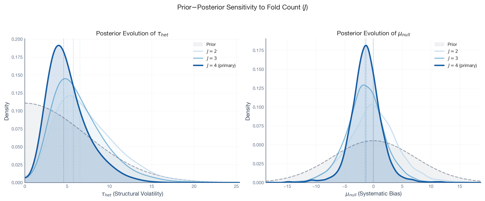
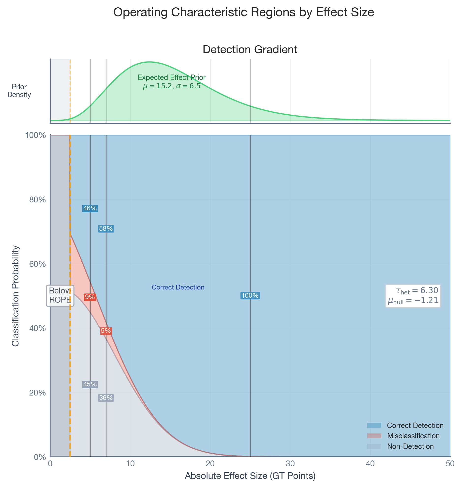

Choose your estimator and define the intervention window length.
Run placebo tests on J historical windows where no treatment occurred.
Pool the placebo residuals into a hierarchical null model to learn the structural volatility.
Specify your minimum detectable effect (ROPE) and expected lift (alternative hypothesis).
Simulate operating characteristics. If assurance is too low or FPR too high, improve the model or reconsider the experiment.
Each step is explained below and demonstrated on the Wendy’s case study.
Introduction
In September 2024, Wendy’s launched the “Krabby Patty Kollab”, a limited-time partnership with Nickelodeon’s SpongeBob SquarePants that generated massive buzz across social media and news outlets. Suppose the Wendy’s analytics team wanted to measure the campaign’s impact on brand search interest using Google Trends data. They can’t randomize who sees a viral fast-food collaboration, so they turn to a quasi-experimental design: Synthetic Control, using other fast-food chains as untreated references.
The model runs. It reports a cumulative lift of +14.5 Google Trends index points over the campaign month, with a tight 95% credible interval of [12.3, 16.6]. Should they trust this number?
The honest answer is: it depends on the structural reliability of the estimator in this specific data environment. That tight credible interval captures inherent time-series noise (what statisticians call aleatoric uncertainty) and parameter uncertainty (epistemic uncertainty), but only conditional on the model’s identifying assumptions holding exactly. It says nothing about whether the model itself is trustworthy. When the identifying assumptions are violated — due to seasonal drift, competitor activity, or weak correlations between Wendy’s and the control brands — the counterfactual prediction deviates from the true unobserved outcome. We call this deviation the structural error, and the broader epistemic uncertainty it reflects structural uncertainty. This is what standard quasi-experimental software ignores.
This paper presents a framework that quantifies both. By running the same estimator on historical periods where no campaign occurred (placebo tests), pooling those “false alarms” into a hierarchical model, and simulating decision outcomes, we produce a calibrated answer: “This design has a 40.8% structural false positive rate and 90.1% probability of detecting effects in the expected range.”
The framework is:
Estimator-agnostic. It wraps around any time-series quasi-experimental method (Interrupted Time Series, Synthetic Control, Difference-in-Differences, Bayesian Structural Time Series) without modifying the estimator itself.
Pre-intervention. The entire analysis runs before the campaign launches, enabling go/no-go decisions based on quantified risk.
Implemented in open-source Python. PyMC for Bayesian inference, CausalPy for quasi-experimental estimation, PreliZ for prior elicitation, and nutpie for MCMC sampling.
The Problem: Two Kinds of Uncertainty
If you’ve designed an A/B test, you’ve already dealt with aleatoric uncertainty: the inherent randomness in your metric. You account for it when you size your test (power analysis) and when you interpret results (confidence or credible intervals). This uncertainty is irreducible: no amount of data collection or modeling can eliminate it.
Time-series quasi-experiments have aleatoric uncertainty too. But they have an additional problem: epistemic uncertainty, the part of our ignorance that is in principle reducible through better data or better models (Hüllermeier & Waegeman, 2021). Because the counterfactual must be modeled rather than randomized, the estimate is exposed to a specific form of epistemic uncertainty: the identifying assumptions may be violated. When they are, the counterfactual prediction deviates from the true unobserved outcome. We call this deviation the structural error, and the broader uncertainty it reflects structural uncertainty. We use structural as shorthand throughout this post.
Bayesian credible intervals capture aleatoric uncertainty and parameter uncertainty well, but only conditional on the model being correctly specified. If the identifying assumptions break down, the estimator may attribute structural error to the intervention, producing a false positive. The framework presented here empirically characterizes the structural uncertainty distribution by calibrating the estimator against its own historical performance.
Setting Up: Code and Data
Before touching any model, we need to answer a fundamental question: how good are our control units at predicting the treated unit? If none of the control brands track Wendy’s search interest very well, the synthetic counterfactual will be imprecise — and any gap between real and synthetic could be mistaken for a treatment effect.
Show code — imports, configuration, and data loading
/opt/anaconda3/envs/cetagostini_web/lib/python3.11/site-packages/pymc_extras/model/marginal/graph_analysis.py:10: FutureWarning: `pytensor.graph.basic.io_toposort` was moved to `pytensor.graph.traversal.io_toposort`. Calling it from the old location will fail in a future release.
from pytensor.graph.basic import io_toposort
Data loaded: 40 months (2022-12 to 2026-03).
Pre-intervention: 21 months available for calibration.
/opt/anaconda3/envs/cetagostini_web/lib/python3.11/site-packages/preliz/ppls/pymc_io.py:12: FutureWarning: `pytensor.graph.basic.ancestors` was moved to `pytensor.graph.traversal.ancestors`. Calling it from the old location will fail in a future release.
from pytensor.graph.basic import ancestors
The raw data: eight fast-food brands on Google Trends
Here’s what we’re working with: monthly search interest for eight fast-food brands from late 2022 through early 2026. Wendy’s (purple) is the brand that ran the campaign; the other seven are potential “donor” brands that the Synthetic Control will blend together to build a counterfactual.
Two diagnostics tell the story. The correlation matrix shows how strongly each brand correlates with Wendy’s — correlations range from near-zero to ~0.45. In A/B testing terms, this is like having a very noisy control group. The Variance Inflation Factors show how much the control brands overlap with each other: high VIF means redundant donors.
Show code — correlation matrix and VIF diagnostics
Bottom line: We’re building a counterfactual from mediocre predictors. That’s not a reason to abandon the analysis — it’s a reason to calibrate how much error that introduces.
The Framework
Design Inputs
Before running any analysis, two sets of inputs must be defined.
Stakeholder inputs (risk tolerance):
ROPE half-width (\Delta): The threshold below which an effect is “practically zero.” For the Wendy’s case, we set \Delta = 2.5 Google Trends points, as a bimonthly lift smaller than 2.5 points is not meaningfully distinguishable from organic fluctuation.
Decision threshold (p^*): The required posterior probability for a definitive call. We use p^* = 0.95.
Domain-knowledge inputs (market expertise):
Expected-Effect Prior (S_{alt}): A probability distribution encoding “if this campaign works, how big will the lift be?” For Wendy’s, the marketing team might judge that a successful viral campaign should produce a bimonthly lift in the range of 5 to 25 GT points.
Placebo schedule (J, L): The number and length of historical windows for calibration. We use J = 4 bimonthly windows randomly selected from the pre-campaign period.
Placebo-in-Time Tests
The core idea is simple: run your estimator on periods where you know the true effect is zero. Any non-zero estimate reveals structural noise: the “background radiation” of your data environment.
We pick several historical windows — periods well before the actual campaign — where we know the true treatment effect is zero. We run the exact same Synthetic Control model on each window, pretending an intervention started there. Whatever the model reports as a “causal effect” is entirely due to structural noise: trends drifting, donors being imperfect, the model’s assumptions not quite holding.
We use random fold selection: we draw pseudo-intervention times uniformly from eligible months (each must have at least 30% of the pre-period as training data, and can’t overlap the real campaign). Random windows sample different structural regimes, avoid temporal correlation between adjacent folds, and make the exchangeability assumption of the hierarchical model more plausible.
The code cell below defines the utility functions we’ll use throughout the rest of the analysis — the Synthetic Control factory, the RandomPlaceboAnalysis runner, the ROPE decision rule, the hierarchical null fitter, and the operating characteristics simulator.
From the 21-month pre-campaign period, four pseudo-intervention times were randomly selected (seed = 42), subject to the eligibility constraints: each fold requires at least 30% of pre-intervention data as training, and the placebo windows do not overlap with the intervention period. For each, we fit a Bayesian Synthetic Control model (CausalPy’s WeightedSumFitter) using the seven control brands as donor units.
Show code — run placebo calibration
_pa = RandomPlaceboAnalysis( experiment_factory=sc_factory, dataset=df_pre, intervention_start_date=cfg.INTERVENTION_START, intervention_months=cfg.PLACEBO_MONTHS, n_folds=cfg.N_FOLDS, min_training_pct=cfg.MIN_TRAINING_PCT, min_gap=2, exclude_months=cfg.EXCLUDE_MONTHS, seed=cfg.SEED,)results_placebo = _pa.run()print(f"Placebo calibration complete: {len(results_placebo)} folds fitted.")print("Pseudo-intervention start months:",", ".join(r["pseudo_start"].strftime("%b %Y") for r in results_placebo))
Initializing NUTS using jitter+adapt_diag...
Multiprocess sampling (4 chains in 4 jobs)
NUTS: [beta, y_hat_sigma]
Sampling 4 chains for 1_000 tune and 1_000 draw iterations (4_000 + 4_000 draws total) took 11 seconds.
There was 1 divergence after tuning. Increase `target_accept` or reparameterize.
Sampling: [beta, y_hat, y_hat_sigma]
Sampling: [y_hat]
Sampling: [y_hat]
Sampling: [y_hat]
Sampling: [y_hat]
Initializing NUTS using jitter+adapt_diag...
Multiprocess sampling (4 chains in 4 jobs)
NUTS: [beta, y_hat_sigma]
Sampling 4 chains for 1_000 tune and 1_000 draw iterations (4_000 + 4_000 draws total) took 10 seconds.
Sampling: [beta, y_hat, y_hat_sigma]
Sampling: [y_hat]
Sampling: [y_hat]
Sampling: [y_hat]
Sampling: [y_hat]
Initializing NUTS using jitter+adapt_diag...
Multiprocess sampling (4 chains in 4 jobs)
NUTS: [beta, y_hat_sigma]
Sampling 4 chains for 1_000 tune and 1_000 draw iterations (4_000 + 4_000 draws total) took 9 seconds.
There was 1 divergence after tuning. Increase `target_accept` or reparameterize.
Sampling: [beta, y_hat, y_hat_sigma]
Sampling: [y_hat]
Sampling: [y_hat]
Sampling: [y_hat]
Sampling: [y_hat]
Initializing NUTS using jitter+adapt_diag...
Multiprocess sampling (4 chains in 4 jobs)
NUTS: [beta, y_hat_sigma]
Sampling 4 chains for 1_000 tune and 1_000 draw iterations (4_000 + 4_000 draws total) took 9 seconds.
Sampling: [beta, y_hat, y_hat_sigma]
Sampling: [y_hat]
Sampling: [y_hat]
Sampling: [y_hat]
Sampling: [y_hat]
Placebo calibration complete: 4 folds fitted.
Pseudo-intervention start months: Aug 2023, Nov 2023, Feb 2024, May 2024
The plot below shows which historical periods were selected as placebo windows. Each colored band is a bimonthly window where we pretended an intervention happened and ran the full Synthetic Control pipeline. The hatched region on the right is the actual Krabby Patty campaign — completely untouched during calibration.
Now we extract the cumulative effect posteriors from each placebo fold. Even though the true effect is zero in every window, the model reports estimated lifts ranging from approximately −4.7 to +4.2 Google Trends points. The model hallucinates non-trivial lifts from pure structural drift.
Show code — extract placebo posteriors
post_impact, fold_means, fold_sds = extract_posteriors(results_placebo)n_samples = post_impact.sizes["sample"]print(f"Fold means: [{', '.join(f'{m:.2f}'for m in fold_means)}]")print(f"Fold SDs: [{', '.join(f'{s:.2f}'for s in fold_sds)}]")
/var/folders/f0/rbz8xs8s17n3k3f_ccp31bvh0000gn/T/ipykernel_94853/2660815027.py:126: FutureWarning: updating coordinate 'sample' with a PandasMultiIndex would leave the multi-index level coordinates ['chain', 'draw'] in an inconsistent state. This will raise an error in the future. Use `.drop_vars(['sample', 'chain', 'draw'])` before assigning new coordinate values.
post_impact = post_impact.assign_coords(
The histogram below shows the posterior distribution of the cumulative causal effect for each placebo fold. Each histogram represents a period where the true effect is exactly zero — yet the model reports non-trivial effects.
This is the key insight: the model’s credible intervals are too narrow to capture the structural volatility. Each fold’s posterior is tight (small s_j), but the fold means scatter widely. This gap between within-fold precision and between-fold heterogeneity is exactly what the hierarchical null model is designed to capture.
Hierarchical Null Construction
Rather than treating placebo results as isolated anecdotes (“the worst false alarm was 4.2 points”), we model them as draws from a latent distribution: a “status quo” process governing how much structural drift the estimator absorbs.
This is similar to a Bayesian normal–normal random-effects meta-analysis (Higgins & Thompson, 2002), where each placebo fold plays the role of a “study.”
Level 1: Within-fold uncertainty. For each fold j, the posterior mean m_j is a noisy observation of a latent true structural error \theta_j:
\mu_{null}: Systematic bias — the model’s average tendency to over- or under-estimate. In a well-calibrated model, this is near zero.
\tau_{het}: Structural volatility — the critical parameter. A high \tau_{het} means the estimator routinely produces false alarms of non-trivial magnitude.
Level 3: Weakly informative hyperpriors. We set \mu_{null} \sim \mathcal{N}(0, 2\hat{\sigma}) and \tau_{het} \sim \text{HalfNormal}(2\hat{\sigma}), where \hat{\sigma} is the empirical standard deviation of the fold means.
Fitting this model yields a Null Predictive Distribution: the expected range of estimates under “no effect”:
_draws_per_chain = n_samples // cfg.N_CHAINStheta_new_samples = fit_hierarchical_null(fold_means, fold_sds, _draws_per_chain)_mu_hat =float(np.mean(theta_new_samples))_sd_hat =float(np.std(theta_new_samples))print(f"Null Predictive Distribution fitted.")print(f" mu = {_mu_hat:.2f} GT points (estimator bias)")print(f" sigma = {_sd_hat:.2f} GT points (structural volatility)")print(f" Based on {theta_new_samples.shape[0]:,} posterior draws.")
Sampler Progress
Total Chains: 4
Active Chains: 0
Finished Chains:
4
Sampling for now
Estimated Time to Completion:
now
Progress
Draws
Divergences
Step Size
Gradients/Draw
2000
0
0.20
39
2000
0
0.20
47
2000
0
0.21
39
2000
0
0.20
15
Sampling: [theta_new]
Null Predictive Distribution fitted.
mu = -1.21 GT points (estimator bias)
sigma = 6.30 GT points (structural volatility)
Based on 4,000 posterior draws.
The forest plot below (Panel A) shows each placebo fold’s estimated cumulative effect with its 95% credible interval. Panel B shows the resulting Null Predictive Distribution — the hierarchical model’s best estimate of what noise looks like for this estimator.
Show code — forest plot and null predictive distribution
This means that under the status quo, the estimator can easily report cumulative effects of ±12 points or more, purely from structural drift.
Expected-Effect Prior
Classical power analysis requires a single fixed effect size (“if the true lift is exactly 5 points, power is X%”). In Bayesian design analysis, we acknowledge that the true campaign effect is uncertain even if the campaign works. We specify an Expected-Effect PriorS_{alt}: a probability distribution encoding plausible outcomes under the alternative hypothesis.
This moves us from classical Power to Bayesian Assurance (O’Hagan et al., 2005): the unconditional probability of a correct positive decision, averaged over all plausible effect sizes. Assurance answers a more honest question: “Across the realistic range of campaign outcomes, what is the overall probability of a correct detection?”
For the Krabby Patty Kollab, suppose the marketing team expects a bimonthly search interest lift between 5 and 25 Google Trends points if the campaign is successful. Using a Maximum Entropy approach (PreliZ), we find the least informative Gamma distribution with 90% of its mass in [5, 25]:
Show code — expected-effect prior
expected_effect_dist = pz.maxent( pz.Gamma(), lower=cfg.EXPECTED_EFFECT_LOWER, upper=cfg.EXPECTED_EFFECT_UPPER, mass=0.90, plot=False,)_n_draws = theta_new_samples.sizeexpected_effect_samples = expected_effect_dist.rvs( _n_draws, random_state=np.random.default_rng(cfg.SEED),)print(f"Expected-Effect Prior: MaxEnt Gamma with 90% mass in "f"[{cfg.EXPECTED_EFFECT_LOWER}, {cfg.EXPECTED_EFFECT_UPPER}]")print(f" mu = {np.mean(expected_effect_samples):.2f}, "f"sigma = {np.std(expected_effect_samples):.2f}")
Expected-Effect Prior: MaxEnt Gamma with 90% mass in [5.0, 25.0]
mu = 15.25, sigma = 6.40
The plot below overlays the Null Predictive Distribution (grey) with the Expected-Effect Prior (blue). The overlap between the two distributions represents the fundamental difficulty of the decision task: the zone where a real campaign effect is hard to distinguish from structural noise.
Standard practice in quasi-experiments often relies on a binary rule: if the 95% credible interval excludes zero, declare the effect significant. This conflates precision with utility: a very precise estimate of a 0.001-point lift is statistically non-zero but practically worthless.
We adopt the Region of Practical Equivalence (ROPE) framework (Kruschke, 2018). We define a range [-\Delta, +\Delta] around zero representing effects that are “practically zero.” The decision rule is:
Actionable Positive:P(\hat{\tau} > \Delta) \ge p^* — the effect exceeds the practical threshold with high confidence.
Practically Null:P(|\hat{\tau}| \le \Delta) \ge p^* — the effect is negligible.
Indeterminate: Otherwise — the data cannot distinguish signal from noise.
The four-category classification explicitly introduces a “suspend judgment” outcome and a harm-detection mechanism, preventing the common failure mode where weak signals are forced into binary buckets.
The final step combines the Hierarchical Null, the Expected-Effect Prior, and the ROPE decision rule in a Monte Carlo simulation to produce the Operating Characteristic Table: the design’s reliability profile computed before any real campaign data is analyzed.
Note
Algorithm: Bayesian Design Assurance Simulation
For each scenario (null, alternative), repeat N times:
Draw true effect:\theta^*_i from the Null Predictive (null) or from S_{alt} + Null Predictive (alternative)
Draw estimation noise:\sigma_i sampled uniformly from the placebo fold standard deviations
Simulate synthetic posterior: Draw \hat{\tau}_k \sim \mathcal{N}(\theta^*_i, \sigma_i^2) for k = 1, \dots, K
Classify: Apply the ROPE decision rule
Outputs: False Positive Rate (null classified as positive), Bayesian Assurance (alternative classified as positive), and Indeterminacy rates for both scenarios.
The chart below is the core output of the design analysis. It shows three classification outcomes — Actionable (we’d call it a real effect), Practically Null (we’d say nothing happened), and Indeterminate (we can’t tell) — each evaluated under two scenarios: the true state is null (red) or alternative (blue).
Under the status quo, the design erroneously declares an Actionable effect ~41% of the time
Bayesian Assurance
90.1%
If the campaign produces a lift in the expected [5, 25] range, the design detects it with high probability
Null Indeterminacy
53.9%
When there is no effect, 54% of the time the data is simply inconclusive
Alt Indeterminacy
9.3%
When the campaign works, approximately 9% of simulations produce indeterminate results
What does this tell the Wendy’s team? The design has strong detection power (90.1% assurance) but a non-trivial structural false positive rate (40.8%). This is substantially higher than the conventional 5% threshold used in A/B testing, and it reflects a genuine property of the data: Google Trends indices for fast-food brands are noisy and weakly correlated, making the Synthetic Control counterfactual imprecise.
The Payoff: Interpreting Your Estimate in Context
Once the campaign runs and the real data arrives, the standard analysis produces a posterior estimate. But now the team has something they didn’t have before: a calibrated sense of how much to trust it.
Everything so far has been pre-intervention calibration. Now we apply the exact same Synthetic Control estimator to the actual campaign period (Sep–Nov 2024) and get our treatment effect estimate.
A crucial point: The estimate itself is identical regardless of whether you did the design analysis. The framework doesn’t change your model or adjust your numbers. It provides an interpretive overlay — a reliability label that travels with the estimate.
The plot below shows the two panels side by side. Panel A is what you’d see without the framework: a posterior distribution of the cumulative effect. Panel B is what the framework adds: the pre-intervention FPR, Assurance, and Indeterminacy rates — the context you need to interpret Panel A with calibrated confidence.
Without the design analysis, the team sees Panel A: a large, precise positive effect. With the design analysis, they also see Panel B: 90.1% assurance that this design can detect effects in the expected range, tempered by the knowledge that the design has a 40.8% structural FPR. The estimate doesn’t change, but the team’s confidence in interpreting it does.
The intervention estimate of +14.5 GT points is far above the ROPE (±2.5) and within the expected-effect range (5–25), which makes this a high-confidence finding even given the elevated FPR. A smaller observed effect, say +4 points, would warrant considerably more caution given the same structural profile.
Sanity Checks
Before acting on the operating characteristics, we need to answer two uncomfortable questions:
“Am I just seeing my prior?” — With only 4 placebo folds, the hierarchical model’s prior for \tau_{het} could be driving the results.
“Do I have enough placebo folds?” — With J = 2 folds, the between-fold variance is barely identifiable.
Test 1: Does the prior scale change the story?
We re-run the hierarchical model with three different prior widths for \tau_{het}: 1\times, 2\times, and 4\times the empirical standard deviation of the fold means. If the FPR, Assurance, and Indeterminacy are stable across a fourfold range of priors, the data is speaking louder than the prior.
The Assurance is largely stable across prior scales. The FPR shifts modestly, confirming that the elevated false positive rate is a property of the data, not an artifact of the prior.
Test 2: Do we have enough placebo folds?
We refit the hierarchical model using J = 2, 3, 4 folds and watch how \tau_{het} and \mu_{null} evolve. At J = 2, the posterior for \tau_{het} hugs zero — not because the true structural volatility is small, but because two data points can’t identify a variance parameter. As we add folds, the posterior concentrates and stabilizes.
/var/folders/f0/rbz8xs8s17n3k3f_ccp31bvh0000gn/T/ipykernel_94853/2660815027.py:126: FutureWarning: updating coordinate 'sample' with a PandasMultiIndex would leave the multi-index level coordinates ['chain', 'draw'] in an inconsistent state. This will raise an error in the future. Use `.drop_vars(['sample', 'chain', 'draw'])` before assigning new coordinate values.
post_impact = post_impact.assign_coords(
Sampler Progress
Total Chains: 4
Active Chains: 0
Finished Chains:
4
Sampling for now
Estimated Time to Completion:
now
Progress
Draws
Divergences
Step Size
Gradients/Draw
2000
0
0.18
3
2000
0
0.20
15
2000
0
0.18
63
2000
0
0.19
39
/var/folders/f0/rbz8xs8s17n3k3f_ccp31bvh0000gn/T/ipykernel_94853/2660815027.py:126: FutureWarning: updating coordinate 'sample' with a PandasMultiIndex would leave the multi-index level coordinates ['chain', 'draw'] in an inconsistent state. This will raise an error in the future. Use `.drop_vars(['sample', 'chain', 'draw'])` before assigning new coordinate values.
post_impact = post_impact.assign_coords(
Sampler Progress
Total Chains: 4
Active Chains: 0
Finished Chains:
4
Sampling for now
Estimated Time to Completion:
now
Progress
Draws
Divergences
Step Size
Gradients/Draw
2000
0
0.19
63
2000
0
0.18
7
2000
0
0.20
63
2000
0
0.19
23
/var/folders/f0/rbz8xs8s17n3k3f_ccp31bvh0000gn/T/ipykernel_94853/2660815027.py:126: FutureWarning: updating coordinate 'sample' with a PandasMultiIndex would leave the multi-index level coordinates ['chain', 'draw'] in an inconsistent state. This will raise an error in the future. Use `.drop_vars(['sample', 'chain', 'draw'])` before assigning new coordinate values.
post_impact = post_impact.assign_coords(
Sampler Progress
Total Chains: 4
Active Chains: 0
Finished Chains:
4
Sampling for now
Estimated Time to Completion:
now
Progress
Draws
Divergences
Step Size
Gradients/Draw
2000
0
0.20
39
2000
0
0.20
47
2000
0
0.21
39
2000
0
0.20
15

Rule of thumb:J \ge 3 is the minimum for the framework to be meaningful. With J = 2 you’re essentially guessing.
Specification Diagnostics: Picking the Right Model
The framework doubles as a model selection tool. If the operating characteristics are unsatisfactory (high FPR, low assurance, or excessive indeterminacy), the natural next step is to improve the model.
The selection process follows a “Falsification and Efficiency” logic:
Define candidates. Specify a set of theoretically distinct models. For Wendy’s, this might include dropping weakly correlated brands or adding seasonal adjustments.
Run placebo calibration for each. Execute the full framework on each candidate.
Apply selection criteria: Flag any model where FPR exceeds your tolerance. Among valid models, prefer the one that minimizes \tau_{het} (equivalently, maximizes Assurance).
For the Wendy’s case, the low correlations suggest that the Synthetic Control counterfactual is fundamentally limited by the available control pool. The specification diagnostic reveals this as a structural constraint of the data environment rather than a fixable modeling error.
Closing the Loop: Post-Intervention Calibrated Significance
Before the campaign, we asked: “If there’s a real effect, will we detect it?” (Assurance). Now the campaign is over and we have an estimate in hand. The question flips:
“How likely is it that structural noise alone could have produced an estimate this large?”
This is the calibrated tail probability — the post-intervention counterpart to the pre-intervention Assurance.
Post-intervention: Observed estimate + Null Predictive → “Is the result worth acting on?” (act/don’t act)
Bonus: The Detection Gradient
Classical power analysis gives you a single number: the Minimum Detectable Effect (MDE). Effects above it are “detectable”; below it, they’re not. Reality is more nuanced.
The plot below shows detection probability as a continuous function of the true effect size. Instead of a binary threshold, you get a gradient: correct detection (blue), misclassification in the wrong direction (red), and non-detection (grey).
/var/folders/f0/rbz8xs8s17n3k3f_ccp31bvh0000gn/T/ipykernel_94853/3999601536.py:126: UserWarning: This figure includes Axes that are not compatible with tight_layout, so results might be incorrect.
fig.tight_layout(rect=[0, 0, 1, 0.94])

Instead of asking “Is my MDE good enough?”, you can ask “At a 10-point lift, what’s my detection probability? What about 5 points?” This is much more useful for real decision-making.
When This Framework Breaks
Regime shifts. The framework assumes that structural errors during placebo windows are representative of those during the intervention period. If the campaign coincides with a unique structural break (a competitor’s viral moment, a macroeconomic shock), the null predictive distribution will be miscalibrated.
Too few placebo folds. With J < 3, the between-fold variance is essentially unidentifiable. We recommend J \ge 3 as a minimum and sensitivity analysis over the prior scale for \tau_{het}.
Weak controls. When treatment–control correlations are low (as in the Wendy’s case), the Synthetic Control counterfactual is imprecise, inflating \tau_{het} and the FPR. The framework correctly diagnoses this weakness but cannot fix it; the solution is better control data, not a better calibration procedure.
Misspecified stakeholder inputs. If the ROPE is set too narrow, everything becomes indeterminate. If the expected-effect prior is set too optimistically, assurance will be overstated. These inputs require genuine domain knowledge and should be stress-tested.
Conclusion
Quasi-experimental estimates are only as trustworthy as the structural environment in which they are produced. The framework presented here transforms the question from “Is this result significant?” to “How capable is this specific design of distinguishing signal from noise in this specific data environment?”
The Wendy’s case study illustrates both the power and the limitations of the approach. The Krabby Patty Kollab produced a signal (+14.5 GT points) large enough to be confidently detected (90.1% assurance) despite a data environment with substantial structural noise (40.8% FPR). A weaker campaign in the same environment would face genuine interpretability challenges, and the design analysis would have flagged this before the campaign launched.
We encourage practitioners to treat design analysis as a routine step in any quasi-experimental workflow, not as an academic exercise, but as a practical audit of decision reliability.
Code and Data Availability
All code and data for this analysis are available at my personal repository. The Google Trends dataset is publicly reproducible. The analysis relies on open-source software: PyMC for Bayesian inference, CausalPy for the quasi-experimental estimator, PreliZ for prior elicitation, and nutpie for MCMC sampling.
---title: "Can You Trust Your Quasi-Experiment? A Bayesian Framework for Auditing Time-Series Causal Estimates"date: "2026-04-07"categories: [python, experimentation, media mix modeling, mmm, bayesian, pymc, pydata, germany, darmstadt]image: "../images/placebo_bayesian_quasi_experiments.png"jupyter: cetagostini_webformat: html: code-fold: true code-tools: true code-overflow: wrap---::: {.callout-tip}## The Five-Step Recipe1. **Choose your estimator** and define the intervention window length.2. **Run placebo tests** on $J$ historical windows where no treatment occurred.3. **Pool the placebo residuals** into a hierarchical null model to learn the structural volatility.4. **Specify your minimum detectable effect** (ROPE) and expected lift (alternative hypothesis).5. **Simulate operating characteristics.** If assurance is too low or FPR too high, improve the model or reconsider the experiment.Each step is explained below and demonstrated on the Wendy's case study.:::## IntroductionIn September 2024, Wendy's launched the "Krabby Patty Kollab", a limited-time partnership with Nickelodeon's SpongeBob SquarePants that generated massive buzz across social media and news outlets. Suppose the Wendy's analytics team wanted to measure the campaign's impact on brand search interest using Google Trends data. They can't randomize who sees a viral fast-food collaboration, so they turn to a quasi-experimental design: Synthetic Control, using other fast-food chains as untreated references.The model runs. It reports a cumulative lift of +14.5 Google Trends index points over the campaign month, with a tight 95% credible interval of [12.3, 16.6]. Should they trust this number?The honest answer is: *it depends on the structural reliability of the estimator in this specific data environment.* That tight credible interval captures inherent time-series noise (what statisticians call *aleatoric uncertainty*) and parameter uncertainty (*epistemic uncertainty*), but only conditional on the model's identifying assumptions holding exactly. It says nothing about whether the model itself is trustworthy. When the identifying assumptions are violated — due to seasonal drift, competitor activity, or weak correlations between Wendy's and the control brands — the counterfactual prediction deviates from the true unobserved outcome. We call this deviation the **structural error**, and the broader epistemic uncertainty it reflects **structural uncertainty**. This is what standard quasi-experimental software ignores.This paper presents a framework that quantifies both. By running the same estimator on historical periods where no campaign occurred (placebo tests), pooling those "false alarms" into a hierarchical model, and simulating decision outcomes, we produce a calibrated answer: *"This design has a 40.8% structural false positive rate and 90.1% probability of detecting effects in the expected range."*The framework is:- **Estimator-agnostic.** It wraps around any time-series quasi-experimental method (Interrupted Time Series, Synthetic Control, Difference-in-Differences, Bayesian Structural Time Series) without modifying the estimator itself.- **Pre-intervention.** The entire analysis runs before the campaign launches, enabling go/no-go decisions based on quantified risk.- **Implemented in open-source Python.** PyMC for Bayesian inference, CausalPy for quasi-experimental estimation, PreliZ for prior elicitation, and nutpie for MCMC sampling.## The Problem: Two Kinds of UncertaintyIf you've designed an A/B test, you've already dealt with **aleatoric uncertainty**: the inherent randomness in your metric. You account for it when you size your test (power analysis) and when you interpret results (confidence or credible intervals). This uncertainty is irreducible: no amount of data collection or modeling can eliminate it.Time-series quasi-experiments have aleatoric uncertainty too. But they have an additional problem: **epistemic uncertainty**, the part of our ignorance that is in principle reducible through better data or better models (Hüllermeier & Waegeman, 2021). Because the counterfactual must be *modeled* rather than *randomized*, the estimate is exposed to a specific form of epistemic uncertainty: the identifying assumptions may be violated. When they are, the counterfactual prediction deviates from the true unobserved outcome. We call this deviation the **structural error**, and the broader uncertainty it reflects **structural uncertainty**. We use *structural* as shorthand throughout this post.Bayesian credible intervals capture aleatoric uncertainty and parameter uncertainty well, but only conditional on the model being correctly specified. If the identifying assumptions break down, the estimator may attribute structural error to the intervention, producing a false positive. The framework presented here empirically characterizes the structural uncertainty distribution by calibrating the estimator against its own historical performance.## Setting Up: Code and DataBefore touching any model, we need to answer a fundamental question: **how good are our control units at predicting the treated unit?** If none of the control brands track Wendy's search interest very well, the synthetic counterfactual will be imprecise — and any gap between real and synthetic could be mistaken for a treatment effect.```{python}#| code-fold: true#| code-summary: "Show code — imports, configuration, and data loading"import contextlibimport iofrom pathlib import Pathfrom typing import Any, Callableimport arviz as azimport causalpy as cpimport matplotlibimport matplotlib.pyplot as pltimport matplotlib.patches as mpatchesimport matplotlib.gridspec as gridspecimport numpy as npimport pandas as pdimport preliz as pzimport pymc as pmimport scipy.stats as statsimport xarray as xrfrom pydantic import BaseModelfrom types import SimpleNamespace# --- Configuration ---_dir = Path("..").resolve()cfg = SimpleNamespace( DATA_PATH="files/google_trends_demo.csv", DPI=300, SEED=42, TREATMENT_COL="wendys", TREATED_UNITS=["wendys"], CONTROL_UNITS=["mcdonalds", "burger_king", "kfc","taco_bell", "subway", "pizza_hut", "five_guys", ], INTERVENTION_START="2024-09-01", INTERVENTION_MONTHS=3, PLACEBO_MONTHS=2, N_FOLDS=4, MIN_TRAINING_PCT=0.30, EXCLUDE_MONTHS={"2024-10", "2024-11"}, ROPE_HALF_WIDTH=2.5, DECISION_THRESHOLD=0.95, EXPECTED_EFFECT_LOWER=5.0, EXPECTED_EFFECT_UPPER=25.0, N_MCMC_DRAWS=1000, N_MCMC_TUNE=1000, N_CHAINS=4, C_TREATMENT="#7c3aed", C_NULL="#94a3b8", C_ALT="#2563eb", C_FPR="#E24A33", C_ASSURANCE="#348ABD", C_INDET="#988ED5", C_NEGATIVE="#b91c1c", C_OTHER_BRANDS="#a8d4f0", BRAND_COLORS={"wendys": "#7c3aed","mcdonalds": "#b8ddf0","burger_king": "#9dcee8","kfc": "#82bfe0","taco_bell": "#67b0d8","subway": "#4ca1d0","pizza_hut": "#3192c8","five_guys": "#1a83b8", }, FOLD_COLORS=["#348ABD", "#E24A33", "#988ED5", "#8EBA42", "#FFB347"],)# --- Plot style ---plt.style.use("seaborn-v0_8-whitegrid")plt.rcParams.update({"figure.figsize": [9, 5],"figure.dpi": 150,"font.family": "sans-serif","font.sans-serif": ["Source Sans Pro", "Helvetica Neue", "Arial"],"font.size": 9,"axes.labelsize": 9,"axes.titlesize": 10,"axes.titleweight": "bold","xtick.labelsize": 8,"ytick.labelsize": 8,"legend.fontsize": 8,"figure.titlesize": 11,"axes.spines.top": False,"axes.spines.right": False,"axes.edgecolor": "#64748b","axes.labelcolor": "#334155","xtick.color": "#64748b","ytick.color": "#64748b","grid.alpha": 0.3,})# --- Load data ---df = pd.read_csv(cfg.DATA_PATH, parse_dates=["Time"])df.columns = ["date", "mcdonalds", "burger_king", "wendys", "kfc","taco_bell", "subway", "pizza_hut", "five_guys",]df = df.set_index("date").sort_index().astype(float)intervention_ts = pd.Timestamp(cfg.INTERVENTION_START)df_pre = df.loc[df.index < intervention_ts].copy()print(f"Data loaded: {len(df)} months ({df.index.min():%Y-%m} to {df.index.max():%Y-%m}).")print(f"Pre-intervention: {len(df_pre)} months available for calibration.")```### The raw data: eight fast-food brands on Google TrendsHere's what we're working with: monthly search interest for eight fast-food brands from late 2022 through early 2026. Wendy's (purple) is the brand that ran the campaign; the other seven are potential "donor" brands that the Synthetic Control will blend together to build a counterfactual.```{python}#| code-fold: true#| code-summary: "Show code — raw data plot"fig, ax = plt.subplots(figsize=(10, 5))for brand in cfg.CONTROL_UNITS: ax.plot( df.index, df[brand], color=cfg.BRAND_COLORS.get(brand, cfg.C_OTHER_BRANDS), alpha=0.4, linewidth=1, label=brand.replace("_", " ").title() +" (control)", )ax.plot( df.index, df[cfg.TREATMENT_COL], color=cfg.C_TREATMENT, linewidth=2.5, label="Wendy's (treatment)",)ax.axvline( intervention_ts, color="#0f172a", linestyle="--", linewidth=1.2, alpha=0.7, label="Planned intervention",)ax.axvspan( intervention_ts, intervention_ts + pd.DateOffset(months=cfg.INTERVENTION_MONTHS), alpha=0.08, color=cfg.C_TREATMENT,)ax.set_xlabel("Date")ax.set_ylabel("Google Trends Index")ax.set_title("Google Trends: Fast Food Brands (Monthly)")ax.legend( loc="upper left", frameon=True, fancybox=False, edgecolor="#e2e8f0", fontsize=7, ncol=2,)fig.tight_layout()plt.show()```### How well do the controls predict Wendy's?Two diagnostics tell the story. The **correlation matrix** shows how strongly each brand correlates with Wendy's — correlations range from near-zero to ~0.45. In A/B testing terms, this is like having a very noisy control group. The **Variance Inflation Factors** show how much the control brands overlap with each other: high VIF means redundant donors.```{python}#| code-fold: true#| code-summary: "Show code — correlation matrix and VIF diagnostics"_cols = [cfg.TREATMENT_COL] + cfg.CONTROL_UNITS_corr = df_pre[_cols].corr()fig, (ax_heat, ax_vif) = plt.subplots(1, 2, figsize=(12, 5), gridspec_kw={"width_ratios": [1, 1.2]},)# Panel A: Correlation heatmapim = ax_heat.imshow( _corr.values, cmap="Blues", vmin=-1, vmax=1, aspect="auto",)_labels = [c.replace("_", " ").title() for c in _cols]ax_heat.set_xticks(range(len(_cols)))ax_heat.set_yticks(range(len(_cols)))ax_heat.set_xticklabels(_labels, rotation=45, ha="right", fontsize=7)ax_heat.set_yticklabels(_labels, fontsize=7)for i inrange(len(_cols)):for j inrange(len(_cols)): ax_heat.text( j, i, f"{_corr.values[i, j]:.2f}", ha="center", va="center", fontsize=6.5, color="white"ifabs(_corr.values[i, j]) >0.5else"black", )fig.colorbar(im, ax=ax_heat, shrink=0.8)ax_heat.set_title("A: Correlation Matrix (Pre-Intervention)")# Panel B: VIF_X_ctrl = df_pre[cfg.CONTROL_UNITS].valuesvifs = {}for j_idx, ctrl inenumerate(cfg.CONTROL_UNITS): _y_j = _X_ctrl[:, j_idx] _X_rest = np.delete(_X_ctrl, j_idx, axis=1) _X_rest = np.column_stack([np.ones(_X_rest.shape[0]), _X_rest]) _coef, *_ = np.linalg.lstsq(_X_rest, _y_j, rcond=None) _ss_res = np.sum((_y_j - _X_rest @ _coef) **2) _ss_tot = np.sum((_y_j - _y_j.mean()) **2) _r_sq =1- _ss_res / _ss_tot if _ss_tot >0else0.0 vifs[ctrl] =1.0/ (1.0- _r_sq) if _r_sq <1.0else np.inf_sorted_brands =sorted(vifs, key=vifs.get)_vif_vals = [vifs[b] for b in _sorted_brands]_bar_colors = [cfg.BRAND_COLORS.get(b, cfg.C_OTHER_BRANDS) for b in _sorted_brands]_bar_labels = [b.replace("_", " ").title() for b in _sorted_brands]ax_vif.barh( _bar_labels, _vif_vals, color=_bar_colors, edgecolor="white", linewidth=0.5,)ax_vif.axvline(5, color="#64748b", linestyle="--", linewidth=0.8, label="VIF = 5",)ax_vif.set_xlabel("Variance Inflation Factor")ax_vif.set_title("B: Donor Pool Multicollinearity (VIF)")ax_vif.legend( frameon=True, fancybox=False, edgecolor="#e2e8f0", fontsize=6.5, loc="lower right",)fig.suptitle(f"Treatment\u2013Control Relationships "f"(n = {len(df_pre)} months, pre-intervention)", fontweight="bold", fontsize=10,)fig.tight_layout()plt.show()```**Bottom line:** We're building a counterfactual from mediocre predictors. That's not a reason to abandon the analysis — it's a reason to *calibrate how much error that introduces*.## The Framework### Design InputsBefore running any analysis, two sets of inputs must be defined.**Stakeholder inputs** (risk tolerance):- **ROPE half-width ($\Delta$):** The threshold below which an effect is "practically zero." For the Wendy's case, we set $\Delta = 2.5$ Google Trends points, as a bimonthly lift smaller than 2.5 points is not meaningfully distinguishable from organic fluctuation.- **Decision threshold ($p^*$):** The required posterior probability for a definitive call. We use $p^* = 0.95$.**Domain-knowledge inputs** (market expertise):- **Expected-Effect Prior ($S_{alt}$):** A probability distribution encoding "if this campaign works, how big will the lift be?" For Wendy's, the marketing team might judge that a successful viral campaign should produce a bimonthly lift in the range of 5 to 25 GT points.- **Placebo schedule ($J$, $L$):** The number and length of historical windows for calibration. We use $J = 4$ bimonthly windows randomly selected from the pre-campaign period.### Placebo-in-Time TestsThe core idea is simple: run your estimator on periods where you *know* the true effect is zero. Any non-zero estimate reveals structural noise: the "background radiation" of your data environment.We pick several historical windows — periods well before the actual campaign — where we *know* the true treatment effect is zero. We run the exact same Synthetic Control model on each window, pretending an intervention started there. Whatever the model reports as a "causal effect" is entirely due to structural noise: trends drifting, donors being imperfect, the model's assumptions not quite holding.We use **random** fold selection: we draw pseudo-intervention times uniformly from eligible months (each must have at least 30% of the pre-period as training data, and can't overlap the real campaign). Random windows sample different structural regimes, avoid temporal correlation between adjacent folds, and make the exchangeability assumption of the hierarchical model more plausible.The code cell below defines the utility functions we'll use throughout the rest of the analysis — the Synthetic Control factory, the RandomPlaceboAnalysis runner, the ROPE decision rule, the hierarchical null fitter, and the operating characteristics simulator.```{python}#| code-fold: true#| code-summary: "Show code — utility functions"# --- Synthetic Control factory ---def sc_factory(dataset, treatment_time, treatment_time_end):"""CausalPy Synthetic Control factory."""return cp.SyntheticControl( dataset, treatment_time, control_units=cfg.CONTROL_UNITS, treated_units=cfg.TREATED_UNITS, model=cp.pymc_models.WeightedSumFitter( sample_kwargs={"target_accept": 0.95,"random_seed": cfg.SEED, } ), )# --- Random Placebo Analysis ---class RandomPlaceboAnalysis(BaseModel):"""Placebo-in-time analysis with randomly selected windows.""" model_config = {"arbitrary_types_allowed": True} experiment_factory: Callable dataset: pd.DataFrame intervention_start_date: str intervention_months: int=1 n_folds: int=4 min_training_pct: float=0.30 min_gap: int=1 exclude_months: set[str] |None=None seed: int=42def run(self) ->list[dict[str, Any]]: treatment_time = pd.Timestamp(self.intervention_start_date) pre_df =self.dataset.loc[self.dataset.index < treatment_time].copy()if pre_df.empty:raiseValueError("No observations before treatment_time.") n_total =len(pre_df) min_training =int(np.ceil(self.min_training_pct * n_total)) exclude =self.exclude_months orset() all_dates = pre_df.index.sort_values() candidates = []for date in all_dates: pseudo_end = date + pd.DateOffset(months=self.intervention_months)if date.strftime("%Y-%m") in exclude:continue n_pre = (all_dates < date).sum()if n_pre < min_training:continueif pseudo_end > treatment_time:continue candidates.append(date)iflen(candidates) <self.n_folds:raiseValueError(f"Only {len(candidates)} eligible periods, "f"but {self.n_folds} folds requested." ) rng = np.random.default_rng(self.seed) pool =list(range(len(candidates))) selected_idx = []for _ inrange(self.n_folds): valid = [ i for i in poolifall(abs(i - s) >=self.min_gap for s in selected_idx) ]ifnot valid:raiseValueError("Cannot select enough folds with min_gap constraint." ) pick = rng.choice(valid) selected_idx.append(pick) pool.remove(pick) selected =sorted([candidates[i] for i in selected_idx]) results = []for fold_idx, pseudo_start inenumerate(selected, 1): pseudo_end = pseudo_start + pd.DateOffset(months=self.intervention_months) fold_df = pre_df.loc[pre_df.index < pseudo_end].sort_index() result =self.experiment_factory(fold_df, pseudo_start, pseudo_end) results.append({"fold": fold_idx,"pseudo_start": pseudo_start,"pseudo_end": pseudo_end,"result": result, })return results# --- ROPE decision rule ---def bayesian_rope_decision(samples, rope_half_width, threshold):"""Classify a posterior sample under the ROPE decision rule."""if samples.ndim !=1: samples = np.asarray(samples).ravel() prob_pos = (samples > rope_half_width).mean() prob_neg = (samples <-rope_half_width).mean() prob_null = (np.abs(samples) <= rope_half_width).mean()if prob_pos >= threshold:return"positive"elif prob_neg >= threshold:return"negative"elif prob_null >= threshold:return"null"else:return"indeterminate"# --- Extract posteriors from placebo results ---def extract_posteriors(results):"""Extract cumulative posterior summaries from placebo fold results.""" post_impact = xr.concat( [ r["result"] .post_impact.sum("obs_ind") .isel(treated_units=0) .stack(sample=("chain", "draw"))for r in results ], dim="fold", ) post_impact = post_impact.assign_coords( sample=np.arange(post_impact.sizes["sample"]) ) n_folds = post_impact.sizes["fold"] fold_means = np.array([ post_impact.isel(fold=i).mean().item() for i inrange(n_folds) ]) fold_sds = np.array([ post_impact.isel(fold=i).std().item() for i inrange(n_folds) ]) fold_sds = np.where(fold_sds <1e-6, 1e-6, fold_sds)return post_impact, fold_means, fold_sds# --- Hierarchical null model ---def fit_hierarchical_null(fold_means, fold_sds, draws_per_chain):"""Fit hierarchical normal-normal null model; return theta_new samples.""" n_folds =len(fold_means) prior_mu_scale = (float(np.nanstd(fold_means)) if np.nanstd(fold_means) >0else1.0 ) coords = {"fold": np.arange(n_folds)}with pm.Model(coords=coords) as model: pm.Data("obs_means", fold_means, dims="fold") obs_sd = pm.Data("obs_sd", fold_sds, dims="fold") mu = pm.Normal("mu", mu=0.0, sigma=2.0* prior_mu_scale) tau = pm.HalfNormal("tau", sigma=2.0* prior_mu_scale) z = pm.Normal("z", mu=0.0, sigma=1.0, dims="fold") theta = pm.Deterministic("theta", mu + tau * z, dims="fold") pm.Normal("lik", mu=theta, sigma=obs_sd, observed=fold_means, dims="fold", ) idata = pm.sample( draws=draws_per_chain, tune=cfg.N_MCMC_TUNE, chains=cfg.N_CHAINS, target_accept=0.97, nuts_sampler="nutpie", random_seed=cfg.SEED, )with model: model.add_coords({"new": np.arange(1)}) pm.Normal("theta_new", mu=mu, sigma=tau, dims="new") ppc = pm.sample_posterior_predictive( idata, var_names=["theta_new"], random_seed=cfg.SEED, )return ( ppc["posterior_predictive"]["theta_new"] .stack(sample=("chain", "draw")).values.squeeze() )# --- Operating characteristics simulator ---def compute_oc(theta_new_samples, fold_sds, expected_effect_samples, n_samples_total):"""Compute operating characteristics via ROPE simulation.""" n_reps =int(min(theta_new_samples.size, expected_effect_samples.size)) rng = np.random.default_rng(cfg.SEED) null_decisions, alt_decisions = [], []for i inrange(n_reps): sd_sim = rng.choice(fold_sds) post_null = rng.normal(float(theta_new_samples[i]), sd_sim, size=n_samples_total, ) null_decisions.append( bayesian_rope_decision(post_null, cfg.ROPE_HALF_WIDTH, cfg.DECISION_THRESHOLD) ) post_alt = rng.normal(float(expected_effect_samples[i] + theta_new_samples[i]), sd_sim, size=n_samples_total, ) alt_decisions.append( bayesian_rope_decision(post_alt, cfg.ROPE_HALF_WIDTH, cfg.DECISION_THRESHOLD) ) null_decisions = np.array(null_decisions) alt_decisions = np.array(alt_decisions) _null_act = (null_decisions =="positive") | (null_decisions =="negative") _alt_act = (alt_decisions =="positive") | (alt_decisions =="negative")return {"FPR": float(np.mean(_null_act)),"Assurance": float(np.mean(_alt_act)),"Null Indet.": float(np.mean(null_decisions =="indeterminate")),"Alt Indet.": float(np.mean(alt_decisions =="indeterminate")),"Null True Neg.": float(np.mean(null_decisions =="null")),"Alt False Neg.": float(np.mean(alt_decisions =="null")),"null_decisions": null_decisions,"alt_decisions": alt_decisions, }```#### Running the Placebo TestsFrom the 21-month pre-campaign period, four pseudo-intervention times were randomly selected (seed = 42), subject to the eligibility constraints: each fold requires at least 30% of pre-intervention data as training, and the placebo windows do not overlap with the intervention period. For each, we fit a Bayesian Synthetic Control model (CausalPy's `WeightedSumFitter`) using the seven control brands as donor units.```{python}#| code-fold: true#| code-summary: "Show code — run placebo calibration"_pa = RandomPlaceboAnalysis( experiment_factory=sc_factory, dataset=df_pre, intervention_start_date=cfg.INTERVENTION_START, intervention_months=cfg.PLACEBO_MONTHS, n_folds=cfg.N_FOLDS, min_training_pct=cfg.MIN_TRAINING_PCT, min_gap=2, exclude_months=cfg.EXCLUDE_MONTHS, seed=cfg.SEED,)results_placebo = _pa.run()print(f"Placebo calibration complete: {len(results_placebo)} folds fitted.")print("Pseudo-intervention start months:",", ".join(r["pseudo_start"].strftime("%b %Y") for r in results_placebo))```The plot below shows which historical periods were selected as placebo windows. Each colored band is a bimonthly window where we *pretended* an intervention happened and ran the full Synthetic Control pipeline. The hatched region on the right is the actual Krabby Patty campaign — completely untouched during calibration.```{python}#| code-fold: true#| code-summary: "Show code — placebo windows schematic"fig, ax = plt.subplots(figsize=(10, 3.5))_dates = df_pre.indexax.plot( _dates, df_pre[cfg.TREATMENT_COL], color=cfg.C_TREATMENT, linewidth=1.5, alpha=0.5,)for i, r inenumerate(results_placebo): ps = r["pseudo_start"] pe = r["pseudo_end"] c = cfg.FOLD_COLORS[i %len(cfg.FOLD_COLORS)] ax.axvspan( ps, pe, alpha=0.2, color=c, label=f"Fold {i+1}: {ps.strftime('%b %Y')}\u2013{pe.strftime('%b %Y')}", ) ax.axvline(ps, color=c, linewidth=1, linestyle="--", alpha=0.6)ax.axvspan( intervention_ts, intervention_ts + pd.DateOffset(months=cfg.INTERVENTION_MONTHS), alpha=0.15, color=cfg.C_TREATMENT, hatch="//",)ax.axvline( intervention_ts, color="#0f172a", linewidth=1.5, linestyle="--", alpha=0.8,)ax.text( intervention_ts + pd.DateOffset(days=10), ax.get_ylim()[1] *0.95,"Planned\nintervention", fontsize=7, va="top", fontweight="bold",)ax.set_xlabel("Date")ax.set_ylabel("Wendy's (GT Index)")ax.set_title("Placebo-in-Time Windows (Random Selection Across Pre-Period)")ax.legend( loc="upper left", fontsize=7, frameon=True, fancybox=False, edgecolor="#e2e8f0",)fig.tight_layout()plt.show()```Now we extract the cumulative effect posteriors from each placebo fold. Even though the true effect is zero in every window, the model reports estimated lifts ranging from approximately −4.7 to +4.2 Google Trends points. The model hallucinates non-trivial lifts from pure structural drift.```{python}#| code-fold: true#| code-summary: "Show code — extract placebo posteriors"post_impact, fold_means, fold_sds = extract_posteriors(results_placebo)n_samples = post_impact.sizes["sample"]print(f"Fold means: [{', '.join(f'{m:.2f}'for m in fold_means)}]")print(f"Fold SDs: [{', '.join(f'{s:.2f}'for s in fold_sds)}]")```The histogram below shows the posterior distribution of the cumulative causal effect for each placebo fold. Each histogram represents a period where **the true effect is exactly zero** — yet the model reports non-trivial effects.```{python}#| code-fold: true#| code-summary: "Show code — placebo posteriors histogram"_n_folds = post_impact.sizes["fold"]fig, ax = plt.subplots(figsize=(8, 5))for i inrange(_n_folds): _data = post_impact.isel(fold=i).values ax.hist( _data, bins=40, density=True, alpha=0.55, color=cfg.FOLD_COLORS[i %len(cfg.FOLD_COLORS)], edgecolor="white", linewidth=0.5, label=f"Fold {i+1} (mean: {fold_means[i]:.1f})", )ax.axvline(0, color="#0f172a", linestyle="-", linewidth=1.2, alpha=0.6, label="Zero")ax.set_xlabel("Cumulative Effect (Google Trends Points)")ax.set_ylabel("Density")ax.set_title("Placebo Cumulative Effect Posteriors (True Effect = 0)")ax.legend(frameon=True, fancybox=False, edgecolor="#e2e8f0")fig.tight_layout()plt.show()```**This is the key insight:** the model's credible intervals are too narrow to capture the structural volatility. Each fold's posterior is tight (small $s_j$), but the fold means scatter widely. This gap between within-fold precision and between-fold heterogeneity is exactly what the hierarchical null model is designed to capture.### Hierarchical Null ConstructionRather than treating placebo results as isolated anecdotes ("the worst false alarm was 4.2 points"), we model them as draws from a latent distribution: a "status quo" process governing how much structural drift the estimator absorbs.This is similar to a Bayesian normal–normal random-effects meta-analysis (Higgins & Thompson, 2002), where each placebo fold plays the role of a "study."**Level 1: Within-fold uncertainty.** For each fold $j$, the posterior mean $m_j$ is a noisy observation of a latent true structural error $\theta_j$:$$m_j \mid \theta_j, s_j \sim \mathcal{N}(\theta_j,\; s_j^2)$$**Level 2: Between-fold heterogeneity.** The latent errors are drawn from a population distribution:$$\theta_j \sim \mathcal{N}(\mu_{null},\; \tau_{het}^2)$$- $\mu_{null}$: Systematic bias — the model's average tendency to over- or under-estimate. In a well-calibrated model, this is near zero.- $\tau_{het}$: Structural volatility — the critical parameter. A high $\tau_{het}$ means the estimator routinely produces false alarms of non-trivial magnitude.**Level 3: Weakly informative hyperpriors.** We set $\mu_{null} \sim \mathcal{N}(0, 2\hat{\sigma})$ and $\tau_{het} \sim \text{HalfNormal}(2\hat{\sigma})$, where $\hat{\sigma}$ is the empirical standard deviation of the fold means.Fitting this model yields a **Null Predictive Distribution**: the expected range of estimates under "no effect":$$\tilde{\theta}_{new} \sim \mathcal{N}(\mu_{null},\; \tau_{het}^2)$$```{python}#| code-fold: true#| code-summary: "Show code — fit hierarchical null model"_draws_per_chain = n_samples // cfg.N_CHAINStheta_new_samples = fit_hierarchical_null(fold_means, fold_sds, _draws_per_chain)_mu_hat =float(np.mean(theta_new_samples))_sd_hat =float(np.std(theta_new_samples))print(f"Null Predictive Distribution fitted.")print(f" mu = {_mu_hat:.2f} GT points (estimator bias)")print(f" sigma = {_sd_hat:.2f} GT points (structural volatility)")print(f" Based on {theta_new_samples.shape[0]:,} posterior draws.")```The forest plot below (Panel A) shows each placebo fold's estimated cumulative effect with its 95% credible interval. Panel B shows the resulting Null Predictive Distribution — the hierarchical model's best estimate of *what noise looks like* for this estimator.```{python}#| code-fold: true#| code-summary: "Show code — forest plot and null predictive distribution"_n_folds =len(fold_means)fig, (ax_forest, ax_null) = plt.subplots(1, 2, figsize=(11, 4.5), gridspec_kw={"width_ratios": [1, 1.3]},)# Panel A: Forest plot_y_pos = np.arange(_n_folds)_ci_95 =1.96for i inrange(_n_folds): lo = fold_means[i] - _ci_95 * fold_sds[i] hi = fold_means[i] + _ci_95 * fold_sds[i] ax_forest.plot( [lo, hi], [i, i], color=cfg.C_ALT, linewidth=2, alpha=0.7, ) ax_forest.plot( fold_means[i], i, "o", color=cfg.C_ALT, markersize=7, zorder=5, )ax_forest.axvline(0, color="#0f172a", linestyle="--", linewidth=1, alpha=0.5)ax_forest.set_yticks(_y_pos)ax_forest.set_yticklabels([f"Fold {i+1}"for i inrange(_n_folds)])ax_forest.set_xlabel("Cumulative Effect")ax_forest.set_title("A: Placebo Fold Estimates (\u00b195% CI)")ax_forest.invert_yaxis()# Panel B: Null predictive distributionax_null.hist( theta_new_samples, bins=60, density=True, alpha=0.55, color=cfg.C_NULL, edgecolor="white", linewidth=0.5, label="Null Predictive Distribution",)ax_null.axvline(0, color="#0f172a", linestyle="-", linewidth=1.2, alpha=0.6)ax_null.axvline( _mu_hat, color=cfg.C_ALT, linestyle="--", linewidth=1, label=f"Mean = {_mu_hat:.1f}",)ax_null.text(0.95, 0.92,f"$\\mu$ = {_mu_hat:.1f}\n$\\sigma$ = {_sd_hat:.1f}", transform=ax_null.transAxes, fontsize=8, va="top", ha="right", bbox=dict(boxstyle="round,pad=0.3", facecolor="white", edgecolor="#e2e8f0"),)ax_null.set_xlabel("Cumulative Effect")ax_null.set_ylabel("Density")ax_null.set_title("B: Null Predictive Distribution")ax_null.legend(frameon=True, fancybox=False, edgecolor="#e2e8f0")fig.tight_layout()plt.show()```This means that under the status quo, the estimator can easily report cumulative effects of ±12 points or more, purely from structural drift.### Expected-Effect PriorClassical power analysis requires a single fixed effect size ("if the true lift is exactly 5 points, power is X%"). In Bayesian design analysis, we acknowledge that the true campaign effect is uncertain even if the campaign works. We specify an **Expected-Effect Prior** $S_{alt}$: a probability distribution encoding plausible outcomes under the alternative hypothesis.This moves us from classical Power to **Bayesian Assurance** (O'Hagan et al., 2005): the unconditional probability of a correct positive decision, averaged over all plausible effect sizes. Assurance answers a more honest question: *"Across the realistic range of campaign outcomes, what is the overall probability of a correct detection?"*For the Krabby Patty Kollab, suppose the marketing team expects a bimonthly search interest lift between 5 and 25 Google Trends points if the campaign is successful. Using a Maximum Entropy approach (PreliZ), we find the least informative Gamma distribution with 90% of its mass in [5, 25]:```{python}#| code-fold: true#| code-summary: "Show code — expected-effect prior"expected_effect_dist = pz.maxent( pz.Gamma(), lower=cfg.EXPECTED_EFFECT_LOWER, upper=cfg.EXPECTED_EFFECT_UPPER, mass=0.90, plot=False,)_n_draws = theta_new_samples.sizeexpected_effect_samples = expected_effect_dist.rvs( _n_draws, random_state=np.random.default_rng(cfg.SEED),)print(f"Expected-Effect Prior: MaxEnt Gamma with 90% mass in "f"[{cfg.EXPECTED_EFFECT_LOWER}, {cfg.EXPECTED_EFFECT_UPPER}]")print(f" mu = {np.mean(expected_effect_samples):.2f}, "f"sigma = {np.std(expected_effect_samples):.2f}")```The plot below overlays the Null Predictive Distribution (grey) with the Expected-Effect Prior (blue). The overlap between the two distributions represents the fundamental difficulty of the decision task: the zone where a real campaign effect is hard to distinguish from structural noise.```{python}#| code-fold: true#| code-summary: "Show code — null vs alternative overlay"fig, ax = plt.subplots(figsize=(9, 5))ax.hist( theta_new_samples, bins=50, density=True, alpha=0.5, color=cfg.C_NULL, edgecolor="white", linewidth=0.5, label="Null Predictive (Status Quo)",)ax.hist( expected_effect_samples, bins=50, density=True, alpha=0.5, color=cfg.C_ALT, edgecolor="white", linewidth=0.5, label="Expected-Effect Prior (Alternative)",)ax.axvline(0, color="#0f172a", linestyle="-", linewidth=1.2, alpha=0.6)ax.axvspan(-cfg.ROPE_HALF_WIDTH, cfg.ROPE_HALF_WIDTH, alpha=0.1, color="#f59e0b", label=f"ROPE [\u00b1{cfg.ROPE_HALF_WIDTH}]",)ax.axvline(-cfg.ROPE_HALF_WIDTH, color="#f59e0b", linestyle=":", linewidth=1, alpha=0.6)ax.axvline(cfg.ROPE_HALF_WIDTH, color="#f59e0b", linestyle=":", linewidth=1, alpha=0.6)ax.set_xlabel("Cumulative Effect (Google Trends Points)")ax.set_ylabel("Density")ax.set_title("Null Predictive Distribution vs Expected-Effect Prior")ax.legend(frameon=True, fancybox=False, edgecolor="#e2e8f0")fig.tight_layout()plt.show()```## Decision Rules: ROPEStandard practice in quasi-experiments often relies on a binary rule: if the 95% credible interval excludes zero, declare the effect significant. This conflates *precision* with *utility*: a very precise estimate of a 0.001-point lift is statistically non-zero but practically worthless.We adopt the **Region of Practical Equivalence** (ROPE) framework (Kruschke, 2018). We define a range $[-\Delta, +\Delta]$ around zero representing effects that are "practically zero." The decision rule is:- **Actionable Positive:** $P(\hat{\tau} > \Delta) \ge p^*$ — the effect exceeds the practical threshold with high confidence.- **Actionable Negative:** $P(\hat{\tau} < -\Delta) \ge p^*$ — the campaign likely caused harm.- **Practically Null:** $P(|\hat{\tau}| \le \Delta) \ge p^*$ — the effect is negligible.- **Indeterminate:** Otherwise — the data cannot distinguish signal from noise.The four-category classification explicitly introduces a "suspend judgment" outcome and a harm-detection mechanism, preventing the common failure mode where weak signals are forced into binary buckets.```{python}#| code-fold: true#| code-summary: "Show code — ROPE decision rule illustration"fig, axes = plt.subplots(1, 4, figsize=(14, 3.2), sharey=True)_x = np.linspace(-15, 25, 300)_scenarios = [ ("Actionable Positive", 10, 2.0, "#22c55e"), ("Actionable Negative", -8, 2.0, "#ef4444"), ("Practically Null", 0.5, 1.0, "#f59e0b"), ("Indeterminate", 4.0, 3.0, "#94a3b8"),]for ax, (title, mu, sd, color) inzip(axes, _scenarios): density = stats.norm.pdf(_x, mu, sd) ax.fill_between(_x, density, alpha=0.4, color=color) ax.plot(_x, density, color=color, linewidth=1.5) ax.axvspan(-cfg.ROPE_HALF_WIDTH, cfg.ROPE_HALF_WIDTH, alpha=0.15, color="#f59e0b", ) ax.axvline(-cfg.ROPE_HALF_WIDTH, color="#f59e0b", linestyle=":", linewidth=0.8, alpha=0.6) ax.axvline(cfg.ROPE_HALF_WIDTH, color="#f59e0b", linestyle=":", linewidth=0.8, alpha=0.6) ax.axvline(0, color="#0f172a", linestyle="-", linewidth=0.8, alpha=0.4) ax.set_title(title, fontsize=9, fontweight="bold", color=color) ax.set_xlabel("Effect") ax.set_xlim(-15, 20)axes[0].set_ylabel("Density")fig.suptitle(f"ROPE Decision Rule Illustration (ROPE = \u00b1{cfg.ROPE_HALF_WIDTH})", fontweight="bold", fontsize=10,)fig.tight_layout()plt.show()```## Simulating Operating CharacteristicsThe final step combines the Hierarchical Null, the Expected-Effect Prior, and the ROPE decision rule in a Monte Carlo simulation to produce the **Operating Characteristic Table**: the design's reliability profile computed *before* any real campaign data is analyzed.::: {.callout-note}**Algorithm: Bayesian Design Assurance Simulation**For each scenario (null, alternative), repeat $N$ times:1. **Draw true effect:** $\theta^*_i$ from the Null Predictive (null) or from $S_{alt}$ + Null Predictive (alternative)2. **Draw estimation noise:** $\sigma_i$ sampled uniformly from the placebo fold standard deviations3. **Simulate synthetic posterior:** Draw $\hat{\tau}_k \sim \mathcal{N}(\theta^*_i, \sigma_i^2)$ for $k = 1, \dots, K$4. **Classify:** Apply the ROPE decision rule**Outputs:** False Positive Rate (null classified as positive), Bayesian Assurance (alternative classified as positive), and Indeterminacy rates for both scenarios.:::```{python}#| code-fold: true#| code-summary: "Show code — compute operating characteristics"oc_results = compute_oc( theta_new_samples, fold_sds, expected_effect_samples, n_samples,)null_decisions = oc_results["null_decisions"]alt_decisions = oc_results["alt_decisions"]print("Operating Characteristics:")print(f" FPR: {oc_results['FPR']:.1%}")print(f" Assurance: {oc_results['Assurance']:.1%}")print(f" Null Indet.: {oc_results['Null Indet.']:.1%}")print(f" Alt Indet.: {oc_results['Alt Indet.']:.1%}")```The chart below is the core output of the design analysis. It shows three classification outcomes — **Actionable** (we'd call it a real effect), **Practically Null** (we'd say nothing happened), and **Indeterminate** (we can't tell) — each evaluated under two scenarios: the true state is null (red) or alternative (blue).```{python}#| code-fold: true#| code-summary: "Show code — operating characteristics chart"def _three_cat(arr): arr = np.asarray(arr)return [float(np.mean((arr =="positive") | (arr =="negative"))),float(np.mean(arr =="null")),float(np.mean(arr =="indeterminate")), ]null_props = _three_cat(null_decisions)alt_props = _three_cat(alt_decisions)_categories = ["Actionable", "Practically\nNull", "Indeterminate"]fig, ax = plt.subplots(figsize=(9, 4.5))_y_pos = np.arange(len(_categories))_h =0.35ax.barh( _y_pos + _h /2, null_props, _h, label="True State: Null", color=cfg.C_FPR, alpha=0.85, edgecolor="white", linewidth=0.8,)ax.barh( _y_pos - _h /2, alt_props, _h, label="True State: Alternative", color=cfg.C_ASSURANCE, alpha=0.85, edgecolor="white", linewidth=0.8,)ax.set_yticks(_y_pos)ax.set_yticklabels(_categories, fontweight="bold", fontsize=9)ax.set_xlabel("Probability of Decision Outcome")ax.set_xlim(0, 1.15)ax.legend( loc="upper center", bbox_to_anchor=(0.5, -0.14), ncol=2, frameon=True, fancybox=False, edgecolor="#e2e8f0",)ax.grid(axis="x", linestyle=":", alpha=0.4)ax.set_axisbelow(True)_labels_cfg = [ (0, null_props[0], "False Positive", cfg.C_FPR, _h /2), (0, alt_props[0], "True Positive\n(Assurance)", cfg.C_ASSURANCE, -_h /2), (1, null_props[1], "True Negative", cfg.C_FPR, _h /2), (1, alt_props[1], "False Negative", cfg.C_ASSURANCE, -_h /2), (2, null_props[2], "Null Indet.", cfg.C_FPR, _h /2), (2, alt_props[2], "Alt Indet.", cfg.C_ASSURANCE, -_h /2),]for _y, _val, _lbl, _clr, _offset in _labels_cfg: ax.text(max(_val, 0) +0.01, _y + _offset, f"{_lbl}\n{_val:.1%}", va="center", color=_clr, fontsize=7.5, fontweight="bold", )ax.set_title("Bayesian Operating Characteristics (Design Assurance)")fig.tight_layout()plt.show()```| Metric | Value | Interpretation ||--------|------:|----------------|| **False Positive Rate** | 40.8% | Under the status quo, the design erroneously declares an Actionable effect ~41% of the time || **Bayesian Assurance** | 90.1% | If the campaign produces a lift in the expected [5, 25] range, the design detects it with high probability || **Null Indeterminacy** | 53.9% | When there is no effect, 54% of the time the data is simply inconclusive || **Alt Indeterminacy** | 9.3% | When the campaign works, approximately 9% of simulations produce indeterminate results |**What does this tell the Wendy's team?** The design has strong detection power (90.1% assurance) but a non-trivial structural false positive rate (40.8%). This is substantially higher than the conventional 5% threshold used in A/B testing, and it reflects a genuine property of the data: Google Trends indices for fast-food brands are noisy and weakly correlated, making the Synthetic Control counterfactual imprecise.## The Payoff: Interpreting Your Estimate in ContextOnce the campaign runs and the real data arrives, the standard analysis produces a posterior estimate. But now the team has something they didn't have before: a calibrated sense of how much to trust it.Everything so far has been pre-intervention calibration. Now we apply the exact same Synthetic Control estimator to the **actual campaign period** (Sep–Nov 2024) and get our treatment effect estimate.**A crucial point:** The estimate itself is *identical* regardless of whether you did the design analysis. The framework doesn't change your model or adjust your numbers. It provides an **interpretive overlay** — a reliability label that travels with the estimate.```{python}#| code-fold: true#| code-summary: "Show code — run real intervention estimate"_int_ts = pd.Timestamp(cfg.INTERVENTION_START)_end_ts = _int_ts + pd.DateOffset(months=cfg.INTERVENTION_MONTHS)_df_int = df.loc[df.index < _end_ts].copy()_result_int = cp.SyntheticControl( _df_int, _int_ts, control_units=cfg.CONTROL_UNITS, treated_units=cfg.TREATED_UNITS, model=cp.pymc_models.WeightedSumFitter( sample_kwargs={"target_accept": 0.95,"random_seed": cfg.SEED, } ),)int_cumulative = ( _result_int.post_impact .sum("obs_ind") .isel(treated_units=0) .stack(sample=("chain", "draw")) .values)int_mean =float(np.mean(int_cumulative))int_ci_lo, int_ci_hi = np.percentile(int_cumulative, [2.5, 97.5])print(f"Intervention estimate: {int_mean:.1f} GT points")print(f"95% CI: [{int_ci_lo:.1f}, {int_ci_hi:.1f}]")```The plot below shows the two panels side by side. **Panel A** is what you'd see *without* the framework: a posterior distribution of the cumulative effect. **Panel B** is what the framework adds: the pre-intervention FPR, Assurance, and Indeterminacy rates — the context you need to interpret Panel A with calibrated confidence.```{python}#| code-fold: true#| code-summary: "Show code — estimate with calibrated context"fig, (ax_post, ax_ctx) = plt.subplots(1, 2, figsize=(12, 5))# Panel A: Posterior estimateax_post.hist( int_cumulative, bins=50, density=True, alpha=0.5, color=cfg.C_TREATMENT, edgecolor="white", linewidth=0.5,)ax_post.axvline(0, color="#0f172a", linestyle="--", linewidth=1, alpha=0.5)ax_post.axvspan(-cfg.ROPE_HALF_WIDTH, cfg.ROPE_HALF_WIDTH, alpha=0.1, color="#f59e0b",)ax_post.axvline(-cfg.ROPE_HALF_WIDTH, color="#f59e0b", linestyle=":", linewidth=0.8, alpha=0.6)ax_post.axvline(cfg.ROPE_HALF_WIDTH, color="#f59e0b", linestyle=":", linewidth=0.8, alpha=0.6)_decision = bayesian_rope_decision( int_cumulative, cfg.ROPE_HALF_WIDTH, cfg.DECISION_THRESHOLD,)_prob_above =float((int_cumulative > cfg.ROPE_HALF_WIDTH).mean())ax_post.set_title("A: Posterior Estimate (Same Regardless of Framework)", fontweight="bold",)ax_post.set_xlabel("Cumulative Effect (Google Trends Points)")ax_post.set_ylabel("Density")ax_post.text(0.05, 0.95,f"Estimate: {int_mean:.1f}\n"f"95% CI: [{int_ci_lo:.1f}, {int_ci_hi:.1f}]\n"f"P(effect > ROPE): {_prob_above:.1%}\n"f"ROPE decision: {_decision}", transform=ax_post.transAxes, fontsize=8, va="top", bbox=dict(boxstyle="round,pad=0.4", facecolor="white", edgecolor="#e2e8f0"),)# Panel B: Calibrated context_metrics = ["FPR", "Assurance", "Null\nIndet.", "Alt\nIndet."]_values = [null_props[0], alt_props[0], null_props[2], alt_props[2]]_colors = [cfg.C_FPR, cfg.C_ASSURANCE, cfg.C_INDET, cfg.C_INDET]_bars = ax_ctx.bar( _metrics, _values, color=_colors, alpha=0.85, edgecolor="white", linewidth=0.8, width=0.6,)for _bar, _val inzip(_bars, _values): ax_ctx.text( _bar.get_x() + _bar.get_width() /2, _val +0.02,f"{_val:.1%}", ha="center", fontsize=9, fontweight="bold", )ax_ctx.set_ylim(0, 1.1)ax_ctx.set_ylabel("Probability")ax_ctx.set_title("B: Calibrated Decision Context (Pre-Intervention)", fontweight="bold",)ax_ctx.set_axisbelow(True)ax_ctx.grid(axis="y", linestyle=":", alpha=0.4)_go_nogo ="High confidence"if alt_props[0] >0.7else"Exercise caution"ax_ctx.text(0.95, 0.95,f"How much to trust this estimate?\n"f"FPR (structural false positive): {null_props[0]:.1%}\n"f"Assurance (detection power): {alt_props[0]:.1%}\n"f"Interpretation: {_go_nogo}", transform=ax_ctx.transAxes, fontsize=8, va="top", ha="right", bbox=dict(boxstyle="round,pad=0.4", facecolor="#dbeafe", edgecolor=cfg.C_ASSURANCE),)fig.suptitle("Intervention Estimate + Calibrated Decision Risk", fontweight="bold", fontsize=11,)fig.tight_layout()plt.show()```Without the design analysis, the team sees Panel A: a large, precise positive effect. With the design analysis, they also see Panel B: 90.1% assurance that this design can detect effects in the expected range, tempered by the knowledge that the design has a 40.8% structural FPR. The estimate doesn't change, but the team's confidence in interpreting it does.The intervention estimate of +14.5 GT points is far above the ROPE (±2.5) and within the expected-effect range (5–25), which makes this a high-confidence finding even given the elevated FPR. A smaller observed effect, say +4 points, would warrant considerably more caution given the same structural profile.## Sanity ChecksBefore acting on the operating characteristics, we need to answer two uncomfortable questions:1. **"Am I just seeing my prior?"** — With only 4 placebo folds, the hierarchical model's prior for $\tau_{het}$ could be driving the results.2. **"Do I have enough placebo folds?"** — With $J = 2$ folds, the between-fold variance is barely identifiable.### Test 1: Does the prior scale change the story?We re-run the hierarchical model with three different prior widths for $\tau_{het}$: $1\times$, $2\times$, and $4\times$ the empirical standard deviation of the fold means. If the FPR, Assurance, and Indeterminacy are stable across a fourfold range of priors, the data is speaking louder than the prior.```{python}#| code-fold: true#| code-summary: "Show code — prior sensitivity analysis"_multipliers = [1.0, 2.0, 4.0]_sens_results = {}_n_folds =len(fold_means)_prior_mu_scale =float(np.nanstd(fold_means)) if np.nanstd(fold_means) >0else1.0for _mult in _multipliers: _coords = {"fold": np.arange(_n_folds)}with pm.Model(coords=_coords) as _m_sens: pm.Data("obs_means_s", fold_means, dims="fold") _obs_sd_s = pm.Data("obs_sd_s", fold_sds, dims="fold") _mu_s = pm.Normal("mu_s", mu=0.0, sigma=2.0* _prior_mu_scale) _tau_s = pm.HalfNormal("tau_s", sigma=_mult * _prior_mu_scale) _z_s = pm.Normal("z_s", mu=0.0, sigma=1.0, dims="fold") _theta_s = pm.Deterministic("theta_s", _mu_s + _tau_s * _z_s, dims="fold") pm.Normal("lik_s", mu=_theta_s, sigma=_obs_sd_s, observed=fold_means, dims="fold", ) _idata_s = pm.sample( draws=cfg.N_MCMC_DRAWS, tune=cfg.N_MCMC_TUNE, chains=cfg.N_CHAINS, target_accept=0.97, nuts_sampler="nutpie", random_seed=cfg.SEED, )with _m_sens: _m_sens.add_coords({"new_period": np.arange(1)}) pm.Normal("theta_new_s", mu=_mu_s, sigma=_tau_s, dims="new_period") _ppc_s = pm.sample_posterior_predictive( _idata_s, var_names=["theta_new_s"], random_seed=cfg.SEED, ) _theta_s_draws = ( _ppc_s["posterior_predictive"]["theta_new_s"] .stack(sample=("chain", "draw")).values.squeeze() ) _n_reps =int(min(_theta_s_draws.size, expected_effect_samples.size)) _rng_s = np.random.default_rng(cfg.SEED) _null_dec, _alt_dec = [], []for _i inrange(_n_reps): _sd_sim = _rng_s.choice(fold_sds) _pn = _rng_s.normal(float(_theta_s_draws[_i]), _sd_sim, size=n_samples) _null_dec.append( bayesian_rope_decision(_pn, cfg.ROPE_HALF_WIDTH, cfg.DECISION_THRESHOLD) ) _pa = _rng_s.normal(float(expected_effect_samples[_i] + _theta_s_draws[_i]), _sd_sim, size=n_samples, ) _alt_dec.append( bayesian_rope_decision(_pa, cfg.ROPE_HALF_WIDTH, cfg.DECISION_THRESHOLD) ) _null_dec = np.array(_null_dec) _alt_dec = np.array(_alt_dec) _sens_results[_mult] = {"FPR": np.mean(_null_dec =="positive"),"Assurance": np.mean(_alt_dec =="positive"),"Null Indet.": np.mean(_null_dec =="indeterminate"), }_sens_df = pd.DataFrame(_sens_results).T_sens_df.index = [f"{m:.0f}x"for m in _multipliers]fig, axes = plt.subplots(1, 3, figsize=(11, 4), sharey=True)_metrics = ["FPR", "Assurance", "Null Indet."]_colors = [cfg.C_FPR, cfg.C_ASSURANCE, cfg.C_INDET]for ax, _metric, _color inzip(axes, _metrics, _colors): ax.bar( _sens_df.index, _sens_df[_metric], color=_color, alpha=0.85, edgecolor="white", linewidth=0.8, width=0.6, ) ax.set_title(_metric) ax.set_xlabel(r"Prior scale ($\sigma_\tau$)") ax.set_ylim(0, 1.08) ax.set_axisbelow(True)for _idx_b, _v inenumerate(_sens_df[_metric]): ax.text( _idx_b, _v +0.03, f"{_v:.1%}", ha="center", fontsize=8, fontweight="bold", )axes[0].set_ylabel("Probability")fig.suptitle("Prior Sensitivity Analysis", fontweight="bold", fontsize=11)fig.tight_layout()plt.show()```The Assurance is largely stable across prior scales. The FPR shifts modestly, confirming that the elevated false positive rate is a property of the data, not an artifact of the prior.### Test 2: Do we have enough placebo folds?We refit the hierarchical model using $J = 2, 3, 4$ folds and watch how $\tau_{het}$ and $\mu_{null}$ evolve. At $J = 2$, the posterior for $\tau_{het}$ hugs zero — not because the true structural volatility is small, but because two data points can't identify a variance parameter. As we add folds, the posterior concentrates and stabilizes.```{python}#| code-fold: true#| code-summary: "Show code — fold-count sensitivity"_max_folds =len(results_placebo)_js = np.arange(2, _max_folds +1)_draws_per_chain = n_samples // cfg.N_CHAINS_tau_posteriors = {}_mu_posteriors = {}_prior_scale_ref =None_primary_j = cfg.N_FOLDSfor _j in _js: _subset = results_placebo[:int(_j)] _, _fm, _fs = extract_posteriors(_subset) _prior_scale =float(np.nanstd(_fm)) if np.nanstd(_fm) >0else1.0 _n_f =len(_fm) _coords = {"fold": np.arange(_n_f)}with pm.Model(coords=_coords) as _mdl: pm.Data("obs_means", _fm, dims="fold") _obs_sd = pm.Data("obs_sd", _fs, dims="fold") _mu_rv = pm.Normal("mu", mu=0.0, sigma=2.0* _prior_scale) _tau_rv = pm.HalfNormal("tau", sigma=2.0* _prior_scale) _z = pm.Normal("z", mu=0.0, sigma=1.0, dims="fold") _theta = pm.Deterministic("theta", _mu_rv + _tau_rv * _z, dims="fold") pm.Normal("lik", mu=_theta, sigma=_obs_sd, observed=_fm, dims="fold") _idata = pm.sample( draws=_draws_per_chain, tune=cfg.N_MCMC_TUNE, chains=cfg.N_CHAINS, target_accept=0.97, nuts_sampler="nutpie", random_seed=cfg.SEED, ) _tau_posteriors[int(_j)] = _idata.posterior["tau"].values.flatten() _mu_posteriors[int(_j)] = _idata.posterior["mu"].values.flatten()ifint(_j) == _primary_j: _prior_scale_ref =2.0* _prior_scaleif _prior_scale_ref isNone: _prior_scale_ref =2.0* _prior_scalefig, (ax_tau, ax_mu) = plt.subplots(1, 2, figsize=(12, 5))_cmap_vals = np.linspace(0.3, 0.85, len(_js))_j_colors = {int(j_val): plt.cm.Blues(_cmap_vals[i])for i, j_val inenumerate(sorted(_tau_posteriors))}# Left: tau_het_tau_upper =max(np.percentile(v, 99) for v in _tau_posteriors.values()) *1.4_x_tau = np.linspace(0, _tau_upper, 400)_prior_tau_pdf = stats.halfnorm.pdf(_x_tau, scale=_prior_scale_ref)ax_tau.fill_between(_x_tau, 0, _prior_tau_pdf, color="#e5e7eb", alpha=0.5, label="Prior", zorder=1)ax_tau.plot(_x_tau, _prior_tau_pdf, color="#9ca3af", ls="--", lw=1.5, zorder=2)for _j_val insorted(_tau_posteriors): _samples = _tau_posteriors[_j_val] _reflected = np.concatenate([_samples, -_samples]) _kde = stats.gaussian_kde(_reflected) _pdf =2.0* _kde(_x_tau) _is_primary = (_j_val == _primary_j) ax_tau.plot( _x_tau, _pdf, color=_j_colors[_j_val], lw=2.5if _is_primary else1.8, label=f"$J = {_j_val}$"+ (" (primary)"if _is_primary else""), alpha=0.95if _is_primary else0.7, zorder=3+ _j_val, ) ax_tau.fill_between( _x_tau, 0, _pdf, color=_j_colors[_j_val], alpha=0.15if _is_primary else0.06, zorder=2, ) _med =float(np.median(_samples)) ax_tau.axvline(_med, color=_j_colors[_j_val], ls=":", lw=1.0, alpha=0.6)ax_tau.set_xlabel(r"$\tau_{het}$(Structural Volatility)", fontsize=10)ax_tau.set_ylabel("Density", fontsize=10)ax_tau.set_title(r"Posterior Evolution of $\tau_{het}$", fontsize=11, fontweight="bold")ax_tau.set_xlim(0, _tau_upper)ax_tau.set_ylim(bottom=0)ax_tau.legend(fontsize=8, loc="upper right")ax_tau.grid(True, alpha=0.15)# Right: mu_null_mu_abs =max(np.percentile(np.abs(v), 99) for v in _mu_posteriors.values()) *1.5_x_mu = np.linspace(-_mu_abs, _mu_abs, 400)_prior_mu_pdf = stats.norm.pdf(_x_mu, loc=0.0, scale=_prior_scale_ref)ax_mu.fill_between(_x_mu, 0, _prior_mu_pdf, color="#e5e7eb", alpha=0.5, label="Prior", zorder=1)ax_mu.plot(_x_mu, _prior_mu_pdf, color="#9ca3af", ls="--", lw=1.5, zorder=2)for _j_val insorted(_mu_posteriors): _samples = _mu_posteriors[_j_val] _kde = stats.gaussian_kde(_samples) _pdf = _kde(_x_mu) _is_primary = (_j_val == _primary_j) ax_mu.plot( _x_mu, _pdf, color=_j_colors[_j_val], lw=2.5if _is_primary else1.8, label=f"$J = {_j_val}$"+ (" (primary)"if _is_primary else""), alpha=0.95if _is_primary else0.7, zorder=3+ _j_val, ) ax_mu.fill_between( _x_mu, 0, _pdf, color=_j_colors[_j_val], alpha=0.15if _is_primary else0.06, zorder=2, ) _med =float(np.median(_samples)) ax_mu.axvline(_med, color=_j_colors[_j_val], ls=":", lw=1.0, alpha=0.6)ax_mu.axvline(0, color="black", ls="-", lw=0.5, alpha=0.3)ax_mu.set_xlabel(r"$\mu_{null}$(Systematic Bias)", fontsize=10)ax_mu.set_ylabel("Density", fontsize=10)ax_mu.set_title(r"Posterior Evolution of $\mu_{null}$", fontsize=11, fontweight="bold")ax_mu.set_xlim(-_mu_abs, _mu_abs)ax_mu.set_ylim(bottom=0)ax_mu.legend(fontsize=8, loc="upper right")ax_mu.grid(True, alpha=0.15)fig.suptitle(r"Prior$-$Posterior Sensitivity to Fold Count ($J$)", fontweight="bold", fontsize=12,)fig.tight_layout(rect=[0, 0, 1, 0.94])plt.show()```**Rule of thumb:** $J \ge 3$ is the minimum for the framework to be meaningful. With $J = 2$ you're essentially guessing.### Specification Diagnostics: Picking the Right ModelThe framework doubles as a model selection tool. If the operating characteristics are unsatisfactory (high FPR, low assurance, or excessive indeterminacy), the natural next step is to improve the model.The selection process follows a **"Falsification and Efficiency"** logic:1. **Define candidates.** Specify a set of theoretically distinct models. For Wendy's, this might include dropping weakly correlated brands or adding seasonal adjustments.2. **Run placebo calibration for each.** Execute the full framework on each candidate.3. **Apply selection criteria:** Flag any model where FPR exceeds your tolerance. Among valid models, prefer the one that minimizes $\tau_{het}$ (equivalently, maximizes Assurance).For the Wendy's case, the low correlations suggest that the Synthetic Control counterfactual is fundamentally limited by the available control pool. The specification diagnostic reveals this as a structural constraint of the data environment rather than a fixable modeling error.## Closing the Loop: Post-Intervention Calibrated SignificanceBefore the campaign, we asked: *"If there's a real effect, will we detect it?"* (Assurance). Now the campaign is over and we have an estimate in hand. The question flips:> **"How likely is it that *structural noise alone* could have produced an estimate this large?"**This is the **calibrated tail probability** — the post-intervention counterpart to the pre-intervention Assurance.$$p_{cal} = P(\tilde{m}_{new} \geq \hat{\delta}_{obs} \mid H_0)$$A tiny $p_{cal}$ means structural noise is extremely unlikely to explain the result. A large one means you can't rule it out.```{python}#| code-fold: true#| code-summary: "Show code — calibration arc"_mu_null =float(np.mean(theta_new_samples))_sigma_null =float(np.std(theta_new_samples))_s_avg =float(np.mean(fold_sds))_sigma_pred = np.sqrt(_sigma_null**2+ _s_avg**2)_obs_sd =float(np.std(int_cumulative))# Calibrated tail probability_rng = np.random.default_rng(cfg.SEED)_noise_sds = _rng.choice(fold_sds, size=theta_new_samples.size)_pred_null = theta_new_samples + _rng.normal(0, _noise_sds)_p_tail =float(np.mean(_pred_null >= int_mean))_z_cal = (int_mean - _mu_null) / _sigma_pred# Shared x-axis_x_lo =min(_mu_null -4* _sigma_null, -5)_x_hi =max(int_mean +4* _obs_sd, 45)_x = np.linspace(_x_lo, _x_hi, 600)# PDFs_npd_pdf = stats.norm.pdf(_x, _mu_null, _sigma_null)_alt_pdf = expected_effect_dist.pdf(_x)_obs_pdf = stats.norm.pdf(_x, int_mean, _obs_sd)fig, ax = plt.subplots(figsize=(10, 5))# ROPE bandax.axvspan(-cfg.ROPE_HALF_WIDTH, cfg.ROPE_HALF_WIDTH, alpha=0.12, color="#f59e0b", zorder=1, label=f"ROPE [$\\pm${cfg.ROPE_HALF_WIDTH}]")ax.axvline(-cfg.ROPE_HALF_WIDTH, color="#f59e0b", ls=":", lw=0.8, alpha=0.5, zorder=2)ax.axvline(cfg.ROPE_HALF_WIDTH, color="#f59e0b", ls=":", lw=0.8, alpha=0.5, zorder=2)# Null Predictiveax.fill_between(_x, _npd_pdf, alpha=0.25, color=cfg.C_NULL, zorder=3)ax.plot(_x, _npd_pdf, color=cfg.C_NULL, lw=1.8, zorder=4, label=f"Null Predictive ($\\mu$={_mu_null:.1f}, $\\sigma$={_sigma_null:.1f})")# Expected-Effect Priorax.fill_between(_x, _alt_pdf, alpha=0.20, color=cfg.C_ALT, zorder=3)ax.plot(_x, _alt_pdf, color=cfg.C_ALT, lw=1.8, zorder=4, label=f"Expected-Effect Prior $S_{{alt}}$")# Observed Posteriorax.fill_between(_x, _obs_pdf, alpha=0.30, color=cfg.C_TREATMENT, zorder=5)ax.plot(_x, _obs_pdf, color=cfg.C_TREATMENT, lw=2.0, zorder=6, label=f"Observed Posterior ($\\mu$={int_mean:.1f}, $\\sigma$={_obs_sd:.1f})")ax.axvline(0, color="#0f172a", ls="--", lw=0.8, alpha=0.35, zorder=2)ax.text(0.97, 0.95,f"$z_{{cal}}$ = {_z_cal:.1f}\n"f"$P(\\hat{{\\delta}}_{{obs}}\\mid H_0)$ = {_p_tail:.4f}\n"f"$\\sigma_{{pred}}$ = {_sigma_pred:.1f}", transform=ax.transAxes, fontsize=8, va="top", ha="right", bbox=dict(boxstyle="round,pad=0.4", facecolor="white", edgecolor="#e2e8f0"), zorder=10,)ax.set_xlabel("Cumulative Effect (Google Trends Points)")ax.set_ylabel("Density")ax.set_title("Calibration Arc: Null, Prior, and Observed Posterior", fontweight="bold", fontsize=11)ax.legend(loc="upper left", fontsize=7.5, frameon=True, fancybox=False, edgecolor="#e2e8f0")ax.set_xlim(_x_lo, _x_hi)ax.set_ylim(bottom=0)fig.tight_layout()plt.show()```**This completes the decision arc:**- **Pre-intervention:** $S_{alt}$ + Null Predictive → *"Is the experiment worth running?"* (go/no-go)- **Post-intervention:** Observed estimate + Null Predictive → *"Is the result worth acting on?"* (act/don't act)## Bonus: The Detection GradientClassical power analysis gives you a single number: the Minimum Detectable Effect (MDE). Effects above it are "detectable"; below it, they're not. Reality is more nuanced.The plot below shows **detection probability as a continuous function of the true effect size**. Instead of a binary threshold, you get a gradient: correct detection (blue), misclassification in the wrong direction (red), and non-detection (grey).```{python}#| code-fold: true#| code-summary: "Show code — detection gradient"_mu =float(np.mean(theta_new_samples))_tau =float(np.std(theta_new_samples))_sa =float(np.mean(fold_sds))_delta = cfg.ROPE_HALF_WIDTH_z_thr = stats.norm.ppf(cfg.DECISION_THRESHOLD)_x_max = cfg.EXPECTED_EFFECT_UPPER *2_eff = np.linspace(0, _x_max, 500)_prior_pdf = expected_effect_dist.pdf(_eff)_prior_mu =float(expected_effect_dist.mean())_prior_sd =float(expected_effect_dist.std())fig = plt.figure(figsize=(7, 7))_gs = gridspec.GridSpec(2, 1, height_ratios=[1, 5], hspace=0.06)ax_p = fig.add_subplot(_gs[0])ax = fig.add_subplot(_gs[1])# Top: Expected-Effect Prior densityax_p.fill_between(_eff, 0, _prior_pdf, color="#22c55e", alpha=0.25)ax_p.plot(_eff, _prior_pdf, color="#22c55e", lw=1.2, alpha=0.7)ax_p.axvline(_delta, color="#f59e0b", ls="--", lw=1, alpha=0.5)ax_p.axvspan(0, _delta, color="#9ca3af", alpha=0.15)ax_p.set_xlim(0, _x_max)ax_p.set_yticks([])ax_p.tick_params(labelbottom=False)for _sp in ["top", "right"]: ax_p.spines[_sp].set_visible(False)ax_p.set_ylabel("Prior\nDensity", fontsize=7, rotation=0, labelpad=30, va="center")ax_p.set_title("Detection Gradient", fontweight="bold", fontsize=11, pad=6)ax_p.text( _prior_mu, _prior_pdf.max() *0.55,f"Expected Effect Prior\n$\\mu={_prior_mu:.1f}$, $\\sigma={_prior_sd:.1f}$", fontsize=7, ha="center", color="#15803d",)# Classification boundaries_bnd_pos = _delta + _z_thr * _sa_bnd_neg =-(_delta + _z_thr * _sa)def _Phi(b):return stats.norm.cdf((b - _eff - _mu) / _tau)_p_detect_raw =1- _Phi(_bnd_pos)_p_misclass_raw = _Phi(_bnd_neg)_below_rope = _eff <= _delta_p_detect = np.where(_below_rope, 0.0, _p_detect_raw)_p_misclass = np.where(_below_rope, 0.0, _p_misclass_raw)_p_nondetect = np.clip(1- _p_detect - _p_misclass, 0, 1)_c1 = _p_nondetect_c2 = _c1 + _p_misclassax.fill_between(_eff, 0, _c1, color=cfg.C_NULL, alpha=0.30)ax.fill_between(_eff, _c1, _c2, color=cfg.C_FPR, alpha=0.30)ax.fill_between(_eff, _c2, 1, color=cfg.C_ASSURANCE, alpha=0.40)for _curve, _col in [(_c1, cfg.C_NULL), (_c2, cfg.C_FPR)]: ax.plot(_eff, _curve, color=_col, lw=0.8, alpha=0.5)ax.axvspan(0, _delta, color="#9ca3af", alpha=0.35, zorder=4)ax.text( _delta /2, 0.50, "Below\nROPE", fontsize=8, ha="center", va="center", color="#4b5563", fontweight="bold", zorder=5, bbox=dict(boxstyle="round,pad=0.3", fc="white", ec="#9ca3af", alpha=0.85),)ax.axvline(_delta, color="#f59e0b", ls="--", lw=1.5, alpha=0.8, zorder=5)_guide_xs = [cfg.EXPECTED_EFFECT_LOWER, 5, 7, cfg.EXPECTED_EFFECT_UPPER]for _x_val in _guide_xs: ax.axvline(_x_val, color="black", ls="-", lw=0.8, alpha=0.5, zorder=6) ax_p.axvline(_x_val, color="black", ls="-", lw=0.8, alpha=0.3) _i_v = np.argmin(np.abs(_eff - _x_val)) _bands = [ (0, _c1[_i_v], _p_nondetect[_i_v], cfg.C_NULL, "white"), (_c1[_i_v], _c2[_i_v], _p_misclass[_i_v], cfg.C_FPR, "white"), (_c2[_i_v], 1.0, _p_detect[_i_v], cfg.C_ASSURANCE, "white"), ]for _y_lo, _y_hi, _prob_v, _bg_col, _fg_col in _bands: _band_h = _y_hi - _y_loif _band_h >0.045: ax.text( _x_val, (_y_lo + _y_hi) /2, f"{_prob_v:.0%}", fontsize=6.5, ha="center", va="center", color=_fg_col, fontweight="bold", zorder=7, bbox=dict(boxstyle="round,pad=0.12", fc=_bg_col, ec="none", alpha=0.85), )_mid_x = (_guide_xs[-2] + _guide_xs[-1]) /2_i_lbl = np.argmin(np.abs(_eff - _mid_x))for _y_lo_a, _y_hi_a, _label, _color in [ (np.zeros_like(_eff), _c1, "Non-Detection", "#475569"), (_c1, _c2, "Misclassification", "#991b1b"), (_c2, np.ones_like(_eff), "Correct Detection", "#1e40af"),]: _bh = _y_hi_a[_i_lbl] - _y_lo_a[_i_lbl]if _bh >0.08: ax.text( _mid_x, (_y_lo_a[_i_lbl] + _y_hi_a[_i_lbl]) /2, _label, fontsize=6.5, ha="center", va="center", color=_color, fontweight="bold", )ax.text(0.97, 0.50,rf"$\tau_{{\mathrm{{het}}}} = {_tau:.2f}$""\n"rf"$\mu_{{\mathrm{{null}}}} = {_mu:.2f}$", fontsize=8, ha="right", va="center", transform=ax.transAxes, color="#64748b", bbox=dict(boxstyle="round,pad=0.3", fc="white", ec="#cbd5e1"),)ax.set_xlim(0, _x_max)ax.set_ylim(0, 1)ax.set_xlabel("Absolute Effect Size (GT Points)", fontsize=9)ax.set_ylabel("Classification Probability", fontsize=9)ax.yaxis.set_major_formatter(plt.FuncFormatter(lambda v, _: f"{v:.0%}"))ax.grid(True, alpha=0.10)_legend_handles = [ mpatches.Patch(facecolor=cfg.C_ASSURANCE, alpha=0.40, label="Correct Detection"), mpatches.Patch(facecolor=cfg.C_FPR, alpha=0.30, label="Misclassification"), mpatches.Patch(facecolor=cfg.C_NULL, alpha=0.30, label="Non-Detection"),]ax.legend(handles=_legend_handles, loc="lower right", fontsize=7, framealpha=0.9, edgecolor="#cbd5e1")fig.suptitle("Operating Characteristic Regions by Effect Size", fontweight="bold", fontsize=12)fig.tight_layout(rect=[0, 0, 1, 0.94])plt.show()```Instead of asking *"Is my MDE good enough?"*, you can ask *"At a 10-point lift, what's my detection probability? What about 5 points?"* This is much more useful for real decision-making.## When This Framework Breaks**Regime shifts.** The framework assumes that structural errors during placebo windows are representative of those during the intervention period. If the campaign coincides with a unique structural break (a competitor's viral moment, a macroeconomic shock), the null predictive distribution will be miscalibrated.**Too few placebo folds.** With $J < 3$, the between-fold variance is essentially unidentifiable. We recommend $J \ge 3$ as a minimum and sensitivity analysis over the prior scale for $\tau_{het}$.**Weak controls.** When treatment–control correlations are low (as in the Wendy's case), the Synthetic Control counterfactual is imprecise, inflating $\tau_{het}$ and the FPR. The framework correctly diagnoses this weakness but cannot fix it; the solution is better control data, not a better calibration procedure.**Misspecified stakeholder inputs.** If the ROPE is set too narrow, everything becomes indeterminate. If the expected-effect prior is set too optimistically, assurance will be overstated. These inputs require genuine domain knowledge and should be stress-tested.## ConclusionQuasi-experimental estimates are only as trustworthy as the structural environment in which they are produced. The framework presented here transforms the question from *"Is this result significant?"* to *"How capable is this specific design of distinguishing signal from noise in this specific data environment?"*The Wendy's case study illustrates both the power and the limitations of the approach. The Krabby Patty Kollab produced a signal (+14.5 GT points) large enough to be confidently detected (90.1% assurance) despite a data environment with substantial structural noise (40.8% FPR). A weaker campaign in the same environment would face genuine interpretability challenges, and the design analysis would have flagged this *before* the campaign launched.We encourage practitioners to treat design analysis as a routine step in any quasi-experimental workflow, not as an academic exercise, but as a practical audit of decision reliability.## Code and Data AvailabilityAll code and data for this analysis are available at [my personal repository](https://github.com/cetagostini/placebo-in-time-quasi-experiment). The Google Trends dataset is publicly reproducible. The analysis relies on open-source software: PyMC for Bayesian inference, CausalPy for the quasi-experimental estimator, PreliZ for prior elicitation, and nutpie for MCMC sampling.## Authors- Carlos Trujillo [@cetagostini](https://github.com/cetagostini)- Anton Bugaev [@aabugaev](https://github.com/aabugaev)